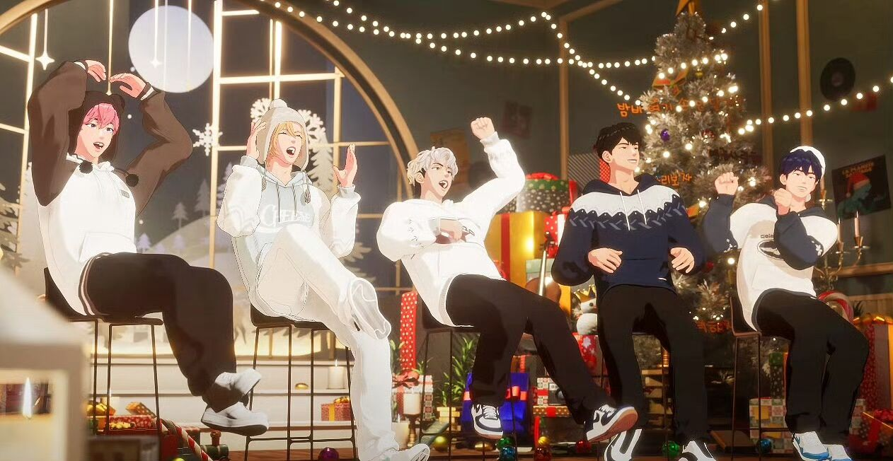
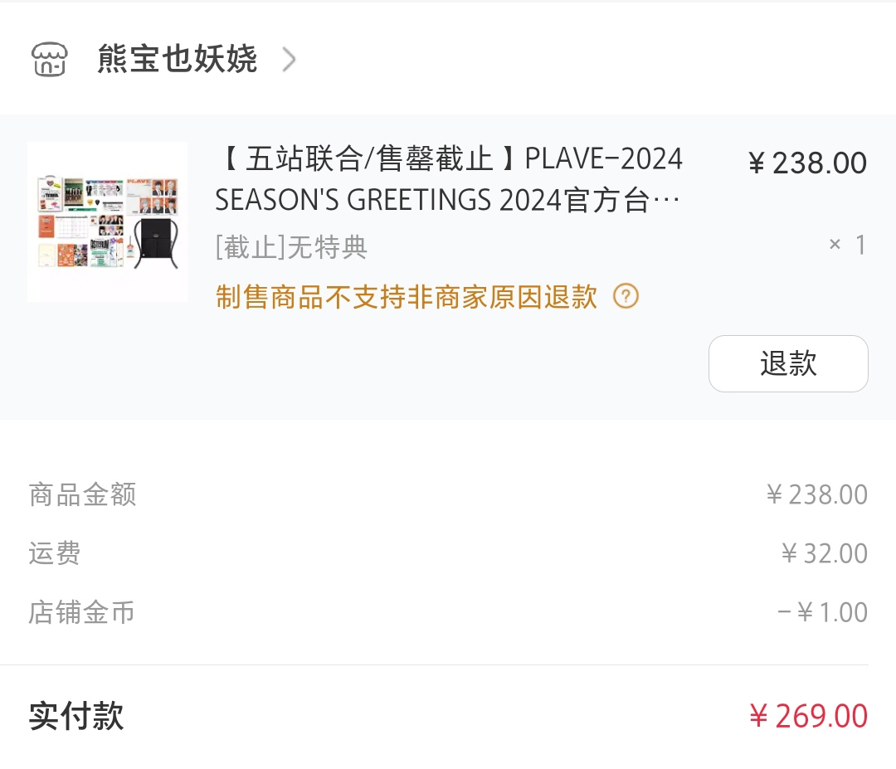
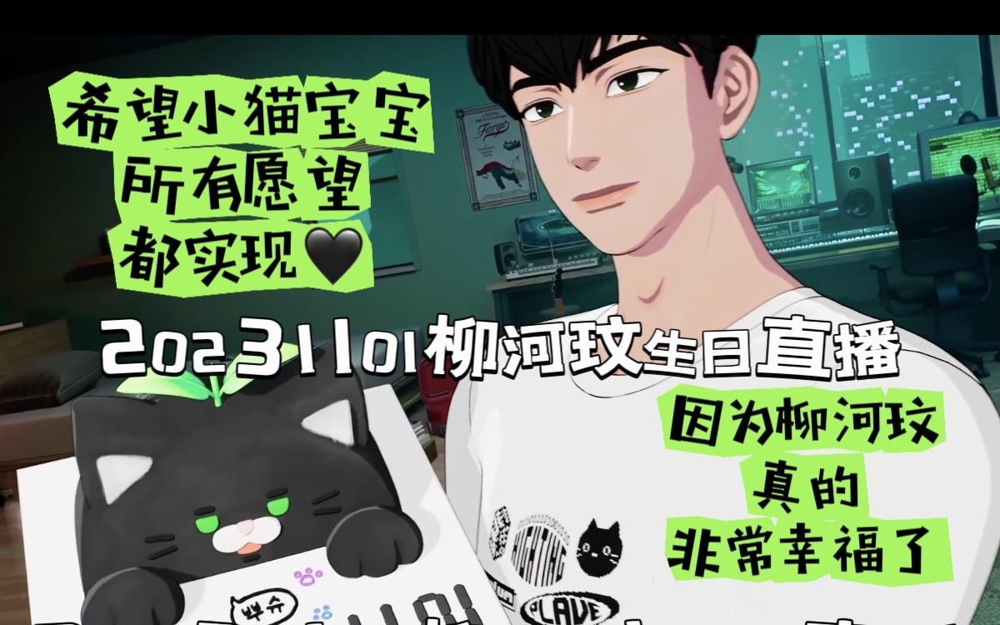
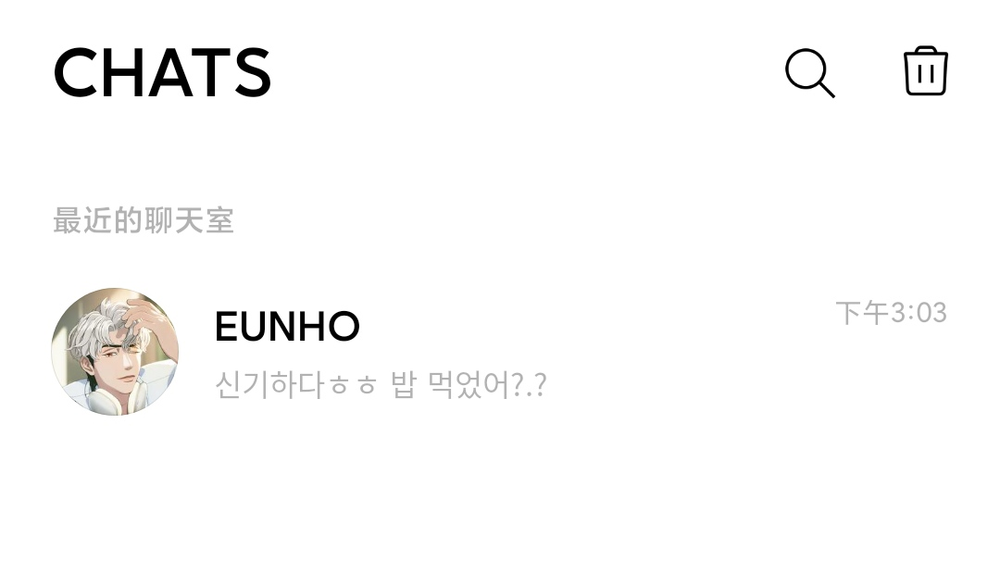
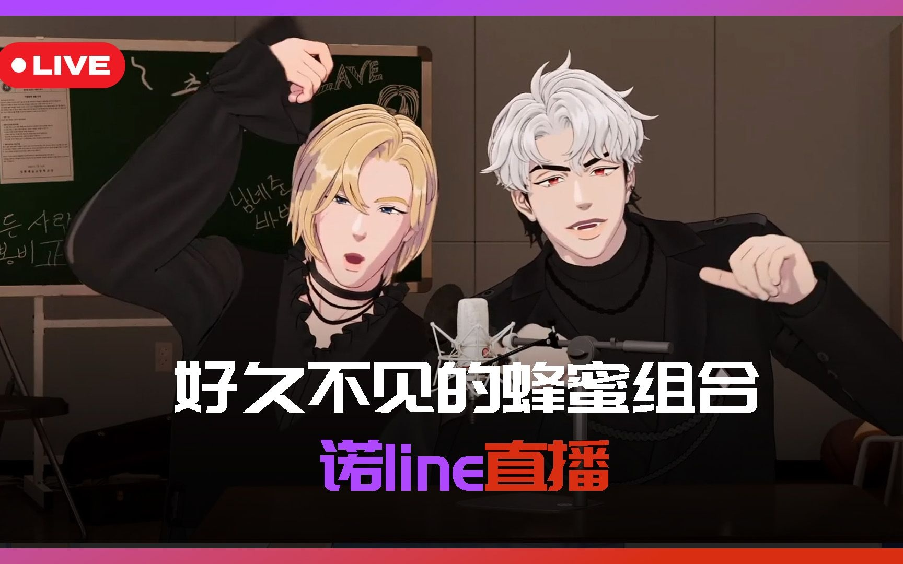
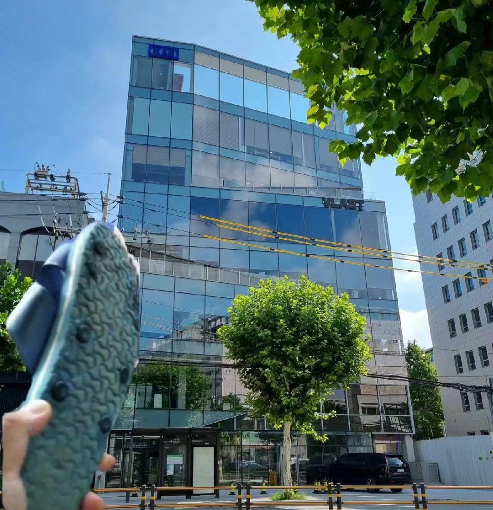

2024
01-25
刚开场就是双簧哈哈 不是双簧是声带模仿！|南斑比和韩河玟出没 原来你们五个今天一整天都待在一起啊😃今天的主题是选取理想型世界杯，听到了好多歌的翻唱，虽然只有片段，不过也很满足😇艺俊清唱《去看星星吧》一小节feat.麻烦女友（？）诺亚 这一段有点搞笑哈哈😂今天也有剧透，但不多，只知道周二五人在一起做了什么，还一起吃饭哈哈 剧透周二五人赛百味吃饭有神秘日程？诺亚金鱼记忆力 算不清楚一周见了几面 也不知道做了什么 / ASTERUM（暂时）未解之谜——艺俊的鲸鱼朋友去哪儿了|20240125*会是剧透吗 然后场景里的鲸鱼也全都不见了，时空缝隙也回到了出道前的状态，感觉确实这次回归和时间倒流有关，果然哥五个要去拯救世界了吗！
01-25
开心！因为不放心足足定了三个闹钟，准时准点蹲守着微店的预售，终于让我抢到诺亚斑比银虎的棉花娃娃了~🥰🥰说起来这还是我第一次抢预售，看群里足足有一千个人，我就知道不简单，预售开始后三分钟就销量突破五百下架了诺亚和银虎，七分钟后斑比下架，实在是惊险…期待娃娃到家的那天，噢噢还要买好看的娃衣~以后可以抱着一起入睡吗！
01-22
今天的直播一开门，就看到虎子穿着灰色的卫衣哈哈哈哈，和旁边坐着的斑比穿着情侣装可还行😂感觉是不是VLAST运营有人看到那条吐槽了啊哈哈，之前就有人说虎子穿秋季校服里面还要穿黑卫衣，然后平常也黑卫衣单穿，有人说这黑卫衣都要穿臭了哈哈哈哈🤣挺好的，虎子的冷白皮也挺适合灰卫衣的，感觉衬着旁边的斑比的皮肤更粉了哈哈😗真的好粉啊斑比，全身上下都粉粉的kk
然后看场景是练舞室，我就知道今天的直播不简单，看来今天轮到虎子的受难日了哈哈😂今天虎子的舞步还是那么绚烂和繁忙，感觉全场舞蹈我只看得见虎子啊啊啊——但是没关系，跳舞最重要的就是自信和气势！舞蹈课的正确打开方式 / 不知道為什麼覺得這段很好笑 / 银虎的地板必杀技 /
今天又狠狠磕到了4399！“怎么不打电话给我”“哥你喜欢斑比哥吗” 总结来说就是虎子爽约了斑比，斑比打了电话给河玟叫他来自己家哈哈，然后虎子还在泡泡上说“唯一感到冷的时候 就是被人遗忘的时候”（这句话还莫名有点非主流…？）所以这到底是什么燃冬？尤其是河玟直接问“哥你喜欢斑比哥吗”，真的好直截了当啊哈哈，感觉艺俊都没这么敢嗑哈哈哈哈🤣还有一个片段 你們yataz把我跟河玟嗑暈了 把斑比写进歌词，斑比又给这段rap词编舞，我就不多说了，直接4399锁死😇🔒 银虎爸妈评银虎跳舞：已放弃😀_ 还有这段，想不通虎子为什么要斑比对你爸爸妈妈说些什么呀？yataz和和美美 然后今天的yataz也吵架了，纯正43味，看河玟好像已经习惯了哈哈哈哈
最后还有一个另类的节奏游戏 《Bits & Bops》，还挺有趣的~而且看得出斑比对游戏是真心的，一遇到游戏就变得异常认真和激动…今天的目标是 粉碎键盘！！ 键盘：我觉得我还可以抢救… 論斑比玩節奏遊戲玩得多開心｜叭叭叭｜唉咕｜爽朗的笑聲｜哈敏尼的小學生哥哥
还得知了一些斑比的TMI 用嘴听古典音乐？但每天合成大西瓜的感性谁懂 原来这家伙其实天天都在玩合成大西瓜😅而且到底为什么吃炸鸡必须得配古典音乐？？还是哈尔移动城堡的哈哈笑死，你小子其实一直都是infp吧！！还有帅气的舞步~ 谁懂斑比这段freestyle有多帅！ / 杀疯了！虚拟爱豆自编舞蹈的水平！甚至配乐还是队友的自创rap！
01-20

第一次迫切地想要拥有一只棉花娃娃🥺以前一直不解为什么会有人买个棉花娃娃爱不释手的，难道是变态和恋物癖吗？没想到现在终于还是轮到了我…但是这两只诺亚和斑比的娃娃真的好可爱ww即使一只就要89元人民币，但还是请上天保佑我能够抢到成团拜托呜呜😭😭
01-20
哥几个怎么又在直播里玩起了情话三行诗…话说虎子你小子怎么又又又向你斑比哥告白了??大师都银虎创作的三首关于蔡斑比的三行诗 我只能说你是真的超爱😊不过这段感觉也有可能是在剧透，”救援”两字感觉会和下次回归的主题有关，我大胆来猜一个，MV是讲述四个哥哥拯救河玟的故事嘿嘿~
今天的直播又是堪称legend的一场。久违的虎子的rap教室 RAP大放送(帅气版)by艺虎玟 先是回顾了一下gang gang gang的经典直播，也是在艺俊的家里，艺俊当时也是穿着这件白衬衫哈哈哈哈😂虎子和河玟的rap还是一如既往地帅气，还有虎子全新的自作词rap~不过最让我印象深刻的还得是艺俊的wait for you自作词rap 出道曲RAP爆改 三人三色 可爱的曲调与rapline形成鲜明的对比哈哈哈哈，唱到一半自己还破防了，还有我想问虎子到底是怎么做到一点都不笑场的，还一本正经地修改作业，然后虎子唱出来的感觉和艺俊的完全不一样了哈哈🤣真是杀人诛心，以至于艺俊连连跪倒在地感到无地自容了哈哈，不过艺俊的版本也很可爱很洗脑，感觉未来演唱会可以用来做应援词哈哈😆还有最后的中华料理rap，头一次见这种food rap哈哈哈 因为意想不到的food rap而要更换迷你专辑list？ 当时直播听感觉还挺有那味的，结果看了老师们的切片才发现艺俊写的这段词这么接地气呀哈哈，看得出艺俊真的超爱中华料理笑死，评论区有人说艺俊是天生的中国女婿可还行🤣难道说这就是你们的闯中曲吗哈哈，嗯嗯闯中餐厅也确实是一个不错的选择~
最后还玩了玩具熊的五夜后宫，据说是玩具熊系列里最恐怖的版本哈哈，感觉今天的确是艺俊受难日，又是rap又是恐怖游戏的哈哈🤣也是难得看到虎子和河玟出现在同一场恐怖游戏里，这两大护法是真的牛，玩具熊几次突脸都纹丝不动，表情毫无波澜的…对比坐在中间的艺俊就吓得魂不守舍的，我真的会笑死啊啊啊——不过最终还是连第一夜都没过就下播了，不过据说下周一是忙内line和斑比，是不是斑比就得接着玩这个游戏了?很期待啊，傲娇的斑比在虎子面前玩恐游会是怎样的表现呢，会是逞强假装不怕，还是被弟line保护着呢哈哈😮我真的很期待啊豆丝，请玩🥺
01-19
很奇妙的感觉…今天诺亚在wvs上发了hype boy的翻唱 Noah Cover - Hypeboy（原唱：Newjeans） 虽然是16号就开始在泡泡上发的小礼物，今天才正式发了完整版在wvs上来着。说起来，我13号在B站动态上还转发了诺亚中之人在选秀节目制作的歌曲《Dream of Girls》文字上写着”交织的过往如同稍纵即逝的梦”，因为这首歌的曲调是激昂活泼的，但是中间一段的歌词却十分感伤，这一段的镜头又同时转向坐在制作人席上的他，脸上浮现的也是感伤的表情，眼角有些红红的…看到这一幕的时候心莫名地被揪住了一样”他是不是回想起了以前的自己呢？”、”在写这段词的时候，你是不是联想到了自己?”这样的想法萦绕在我的脑海，所以我写下了这句话，想问他一句“如今你的梦想可算实现了吗？”、“希望至少此刻你是幸福的”…虽然这样问着，但其实我心中早就有了答案。从四月份一直到现在，真的能够发现诺亚的心在变得越来越软，刚出道时说一句撒浪都感到不好意思，到现在已经变得越来越黏腻，感觉爱意和暖意都要溢出来了哈哈哈哈😇我知道他现在一定很幸福，梦想也是正在进行时。
然后hype boy里有一句歌词是”我那些过往的日子，犹如转眼即忘的梦”，就正好和那句”交织的过往如同稍纵即逝的梦”对应上了，就感到真的很奇妙😉就好像他回应了我的问题，在用这首歌告诉我，他现在真的真的很幸福，with PLAVE and PLLI.
01-18
很想感叹一句，世界上居然真的有这么像小狗的人类😇没错，我说的就是虎子…真的很可爱啊啊啊谁懂🥺
首先，虎子曾说自己吃饭很快，因为怕被别人抢走，这不就是经典的小狗护食吗…喜欢睡艺俊家的地板，因为有地暖睡起来很温暖，并且认为睡床不太礼貌，这不就是妥妥的小狗吗…就连性格上也很像一只黏人的快乐小狗，媚粉媚哥很有一套，然后也是队内唯一的e人哈哈，不知为啥光是看着虎子坐在那里，我就感到很开心哈哈😊如果非得说虎子是什么品种的狗勾，我觉得虎子在斑比面前是西伯利亚哈士奇，在哥line面前则是乖巧的萨摩耶~
01-18
今天去了官咖，向官方发了建议的帖子，说起来这还是我第一次和官方发帖子提建议。事件的起因是今天又刷到了那个银虎的mmd视频，说实话第一次看到这个视频的时候就已经很反感了，但是今天看到这个up主在评论区说以后会配布这个模型的时候，我就真的坐不住了，于是向官方发了这个帖子…
首先，第一次看为什么会觉得很冒犯呢？原因很简单，模型的质量并不高并不好看，和银虎差了很多地方，但是up主却又打着银虎和PLAVE的tag，真的不是来给我家丢人现眼的吗…而且银虎跳drama真的能跳的那么标准吗，光是跳drama这件事就已经让我觉得很ooc了，实在是有些难以直视了…
但就算是up主做出了和vlast一模一样的模型，甚至比vlast的还要精致，这样用来做mmd我还是无法接受。因为PLAVE和其他动漫游戏IP是不一样的，PLAVE的五个人他们并不是完全虚构出来的角色，他们的内核是真实存在着的活生生的人，只要了解他们的粉丝都会明白这一点。把他们做成mmd模型大肆传播，就像是把他们认为是AI一样，让我觉得恼火…对我来说，他们五个人是独一无二的，无可复制的存在！
而且我是做过mmd的，我了解这个圈子的生态…我真的很难想象，未来如果有人用这个低质量的模型去套一些低质量的渲染，甚至是庸俗搞笑的动作，看到这些我是真的会崩溃和举报……从四月份开始追五小漫到现在，我真的有时候觉得一些纯二次元的粉丝很没有边界感，让我感到无语和气恼😓一次是指骂说刷音源刷票是在PUA，一次是要求自证不给还说我们下规矩侵犯隐私，这次又是擅自做mmd侵犯肖像权，又或者是只买同人不买专辑…甚至那个做mmd的up主，十几个牌子里都找不到一个PLAVE的牌子…说真的，粉丝构成复杂有时候真不是一件好事，实在是累了累了……
补：好吧最后我还是把帖子给删掉了…反正这种东西应该不会有人会广泛传播，小部分人圈地自萌罢了。
01-17
感觉和大家一起猜剧透真的很有意思！最近艺俊在泡泡上说的话感觉PLAVE马上就要回归了，日子越来越接近了，真的很期待~噗哩们真的是大侦探呢，从上次六夏回归剧透就看得出来，大家真的很擅长找线索和分析线索，豆丝们也很有料，总是暗戳戳地埋一些线索让我们找哈哈😉比如这次回归，官咖的帖没有了3、6、9、12号，艺俊在泡泡上突然发的一串符号：反转的！和¡官咖爆米花下雪爱心加数字9，也十分耐人寻味…以至于今天晚上我逛了很久的weverse，看了很多噗哩发的帖子中对于剧透的猜想。
有一些说法我很赞同，比如看到！和¡，大家都想到了”反转”的概念。说到反转，就想起六夏回归的那场五人直播里，就有一个镜头很奇怪，感觉整个世界突然反转了，可以看到教室的下面似乎是另一个世界，怎么看都让人觉得这并不是单纯的穿模失误…可是这样来说，难道从六夏刚开始回归就已经开始铺垫下一次回归了吗？？豆丝到底还藏了多少细节，真是让人细思极恐…
仔细去解析艺俊发的这串神秘符号组合，首先爆米花🍿让人联想到电影，之前的直播里就有聊到关于时间穿越的电影，也有问过如果时间停止会怎么样…下雪🌨️让人联想到六夏的下雨🌧，白色的爱心🤍反转过来就是黑色的爱心🖤，数字9反转过来就是6，看来这次回归和时间、反转以及河玟有关…并且将云和9放在一起就是”Cloud 9”，在英语里意为最幸福的瞬间…总结来看，这次回归的主角是河玟，会讲述河玟被关在某地的故事，也就是回到过去的时间，很好奇那个时候河玟和哥哥们都会在哪里呢，又会发生怎样的故事呢？
然后回归日期的话，根据官咖消失的3、6、9、12号，如果去除掉已经反转的6和9号，那就只剩下3和12号还未反转，所以有噗哩说应该是将出道日期反转过来，也就是在2月13号回归，感觉这个说法十拿九稳应该没错！而且这四个数字都和每次回归有关，比如3why，六夏以及12月12日的Merry PLLIstams，只剩下一个9应该就是关于这次回归的！所以也有说可能2月9号会有大动作🤔啊啊我是真的很喜欢这种大家一起谈论、一起找线索分析线索的氛围，已经好多年没有这种体验了，真的很有趣~再次感叹噗哩们的觉察力和分析力，牛牛哒🥰
01-15
最近推上很流行断句，感觉还挺有趣的，五个人都各有特色和笑点哈哈😆
https://weibo.com/1952207525/4989375161830028
https://weibo.com/6856954043/4990257858610159
https://weibo.com/6591628792/4988298133244682
https://weibo.com/6591628792/4990265693832119
尤其是虎子的，已经很久没有看到虎子撒娇了哈哈，还是豆丝懂我爱看什么😉今天直播里斑比也有玩这个，糯米滋来咯~ “这里有糯米糍出没~”｜太可爱是要被我吃掉的!!!
今天直播里的舞蹈接力的游戏也很有趣 “isolation不能停”|奇怪的舞蹈基本功接力第一名 很考验人的记忆力，我承认我的记忆力和斑比差不多，都是七秒钟的记忆…还有随机舞蹈 随机舞蹈哪家强｜什么都会柳河玟｜一点不累蔡斑比｜非常完美韩诺亚 很惊讶河玟居然每一首都能跳，记忆力是真的很强！其实从河玟能精准记住直播中的每一个梗，以及记得很多有趣的梗很有sense这一点看来，就觉得河玟的记忆力很好了哈哈😊随舞的时候很有趣，诺亚在其中浑水摸鱼，总是虚晃一枪，自信地进场，之后又自信地瞬间退场哈哈哈，真是为难我们诺亚了哈哈哈，瞬间就回想起了3why那时候，也是在斑比的游乐场，也是和舞line在一起跳舞，那时候把公主累的坐在板凳上一动不动，仿佛失去了灵魂的样子哈哈哈哈😂不过今天的随舞，公主主打一个气氛组就完事了~放几个舞蹈切片~Elevator/电梯 challenge蔡斑比 / 斑比这段十分钟速成的Perfect Night / 可爱 / Like I Do
今天玩的游戏是八号出口！地铁8号出口游戏完整版cut 看的时候很惊讶，可以说这是唯一一个他们玩的游戏里我熟悉的哈哈，很期待他们通关会要多久哈哈，但是总感觉要加班🙂也是从这个游戏里，刷新了我对诺亚的认知，原来公主是怕这种细思极恐的超现实的东西哈哈 被游戏吓到神同步的漂亮line 明明上次和虎子玩娃娃工厂都没这么怕，甚至还有点烦躁来着哈哈哈哈😂而且看得出诺亚真的挺怕黑的，听他说过漆黑的练习室很可怕，关灯都是要喊着离开赶紧跑的那种哈哈，这样也好可爱啊啊😇
01-14
今天终于拿到了2024年的台历~可能是在收到之前就看了很多噗哩们的开箱视频，因此打开的时候也知晓得一清二楚，感觉没那么多激动哈哈，不过也还是很开心很新奇！首先是把十张小卡一张一张包好膜放进卡册，正好我的这本卡册最后只剩下十张空缺了，看来下次回归得买新卡册了~不得不说的是，这次选择all入整套真的是很正确的选择~十张小卡里面尤其是诺亚的很好看！尤其是这张戴着白色围巾，手心写字的小卡，真的让人看的心空，很有那种青春校园偶像剧的氛围啊谁懂！诺亚戴耳机的小卡也很有氛围感，就像是校园剧里紧张地向学长表白时，学长温柔缓慢地摘下耳机听你细说道来的感觉~斑比穿着白色短t恤，在蓝色天空下迎风看向你的小卡也很有青春男高的氛围，就是那种蓬勃不羁的少年感~我一定会好好收藏的😊
然后还有健身的包，不得不说你们对健身是真心的，摸起来的材质还不错，哪天可以试试背着出去，肯定很酷很帅气，如果能遇见同担就更完美了~然后台历本体的纸质也不错，每个月份都有对应的图，每个成员的生日都有对应的单人图~感觉豆丝真的很懂青春男高的氛围，每张图都很有感觉！无论是迎风肆意的少年，夕阳西下一同坐在围墙之上的少年们，在KTV嗨唱的少年们，体育馆快速运篮球的少年，回到乡下穿花裤戴草帽，以及乐团演出的高光时刻，一同见证初雪的少年们…就好像所有美好的时刻都定格在了此刻😉虽然我没有用台历的习惯，但是把它放在床头边，仅仅是看着也很开心~然后里面其它的东西我就不说了哈哈，我要都收藏起来，不会画一笔的~
01-11
艺俊诺亚斑比，是首长line呢~不过这个组合也可以叫蓝莓草莓芝士组合吧，因为看起来让人很有食欲哈哈😋据说昨天他们五个做了两件事，第一件事是上了英语课 global第一步 集体英语课 原来他们正在学习的语言是英语啊，我之前看采访还以为学的是日语呢，毕竟韩团大都都会闯日，不过学英语也挺好的，为了全球化的目标哈哈，是不是意味着我以后就能看到英语的生放送了，甚至英语单曲~听说虎子能做到无障碍的英语沟通，真是厉害了啊虎子🤗除了舞蹈还有什么是你不会的吗？！然后诺亚有聊到虎子吃饭很快如同喝饭哈哈 “直肠子”都银虎 原来狼吞虎咽这个成语是形容虎子的，真的是一只护食的小狗呢，我真是服了，这个世界上居然真的有那么像狗狗的人！就算是这一点也觉得好可爱啊怎么办呜呜，看得出我真的陷入太深了ww
后半段是音乐剧之夜！难怪今天的场景是诺亚的城堡🏰切换到了夜间城堡和黑色打歌服，还有红色幕布和顶上聚灯光，感觉真的很有看音乐剧的意境呢~还有定制的耳返也有了建模，和实物一模一样呢，很好看很好看的耳返！ 展示PLLI定制耳返的成员们&定制耳返背后的故事
三幕串联 故事响起/音乐剧之夜 先是斑比唱的巴黎圣母院的开场曲，斑比这次选歌选了偏低音多一些的曲目，看得出斑比很有上进心，虽然一直很擅长高音，但是也在练习自己的低音，不错不错~唱歌的时候真的很像优雅且满怀大义天下的小王子呢😊哎一古我是真的很喜欢斑比的少年音ww然后接着是艺俊的弗兰肯斯坦的第一幕第十二曲，不得不感叹艺俊的音色真的很绝，总是能饱含感情地唱出自己的韵味，原曲是比较凄惨的，但是艺俊则唱出了一种迪士尼的味道，那种奋不顾身的感觉~最后是诺亚，诺亚最后的那个长高音是真的强啊，就真的很像优雅高贵的王子殿下啊！！感觉可以又是可以入选我心中的2024年度片段之一，怎么刚开年就这么多惊喜哈哈😆
后半场则是保龄球，只能说转换的太快一时还没缓过来，怎么就突然从大剧院到体育馆了呢我请问…我还没从上一幕缓过来呢喂😦难道这就是雅俗共赏？？好吧，那就让我们接下来来关注首长们的保龄球大赛，究竟这次谁能拔得头冠呢？！让我们拭目以待——这次是高端局啊高端局，前几把三人都击倒了全部的保龄球，稳稳的！第一轮倒没啥好说的，倒是第二轮的障碍局，我也是头一回见保龄球还能这么打😂什么时候我也能买下一部Switch玩一把啊，虽然没啥朋友可以一起玩的X﹏X…然后今天斑比的怪动静也是很多哈哈 像那个农民一样收割一把蔡斑比今日的古怪动静 玩到一半虎子也来了，看来今晚作曲line又要上班了~不过不得不说，听着虎子off的声线真的很好听很涩啊谁懂😇然后玩的过程中，斑比和虎子又小吵了一下，真是过分了你们每次一周一大吵三天一小吵的，难道这是你们小情侣之间的情趣？而且最后虎子还想公主抱斑比哈哈没抱起来 你们43别太暧昧 想问一下什么时候斑比成了你们队内的举重器了，怎么每个人都要来抱一下斑比来展示你们的健身成果啊哈哈哈哈🤣
01-10
https://weverse.io/plave/artist/1-133034570
【中字】PLAVE都银虎Eunho自作词RAP｜写给小漂亮粉丝们
还好今晚没那么早睡！虎子在接近十二点的时候发了自作词的rap，不过他们那边应该已经快凌晨一点了吧，话说小哥哥什么时候能早睡一点…
自作词的rap真的很帅气！尤其是歌词也很有意思，比如”更加疯狂地I’m workin for PLLI”，”谢谢恶意评论者，反而也是宣传呢><”，”我的小漂亮们偶尔会担心，but your idol gonna be the best don’t worry”，而且看到有人说”but your idol”的发音和”visual idol”很相似，很有感觉的歌词！还有那个”lit”的低音声线也很sexy，真的撕裂了虎子！原来本性真的是一头凶狠的狼呢，只是在PLLI面前是可爱的快乐小狗~让我摸摸小狼的头🤗🐺~
01-08
今天是忙内s，rapline，也可以叫猫狗双全~前半场是沟放和唱歌，最惊艳的是虎子唱的stay！ Stay - 都银虎cover(原唱Justin Bieber)｜小猫真的很自豪的感觉(¯︶¯) 这首歌真的很难唱，很容易断气，但是虎子却做到了保持音准的同时，又能不断气地连贯地唱一整首，真假音切换真的很丝滑，真的是铁肺啊，不愧是很厉害的rapper！而且还自动消音，中途面捕掉了的时候还能踩着歌曲的节奏很自然地把面捕调整好，哇哦虎子真的很帅啊啊啊🥰
下半场是电竞，玩的游戏是虎子之前提到过的守望先锋，想起虎子说过自己玩这个游戏很厉害来着哈哈，很期待来着😉然后这一次一下子来了八个豆丝，凑了两队展开对决，在对决的过程中，发现虎子真的很厉害呢，拿了很多的MVP，玩游戏时那个专注严肃的表情也很帅哈哈，果然电竞是男生最好的医美（？听说虎子还特地带了自己的显示器和游戏鼠标，果然男孩子在游戏这方面的胜负欲是很强的哈哈，而且据说豆丝们也在网吧打哈哈哈，一时不知到底虎子和豆丝谁更认真哈哈哈😂 自带装备的银虎vs网吧开黑的豆丝，谁更认真我不好说了
而且豆丝里有一个玩游戏超级厉害的，在上次泡泡堂的对决里也是最强的豆丝3，这次的守望先锋也很强悍，据说是宗师级别！于是玩到后面就有了虎子和豆丝3的solo对决，哇塞看到这里我真的又激动又捏一把汗，好久没看到过这种1v1的对局了🤗都银虎vs豆丝3的solo环节（但是角色压制版） 第一把豆丝赢了，第二把虎子赢了，也算打平了，有几场豆丝3直接爆头秒杀真的很厉害，看得出的确是宗师级别的高手…不过虎子也很强，在第二把的时候也成功打败了豆丝3，虽然虎子一直在问是不是有放水，但是豆丝3说没有放水哈哈，自此突然间豆丝3也收获了一些游戏粉哈哈哈哈😂哎一古虽然说了很多次，我真的真的很喜欢vlast公司的这种氛围，大家一起玩游戏、一起努力干事业的氛围，PLAVE和VLAST是不可分割、紧密连结着的关系呢~😇顺便再羡慕一下带薪打游戏，这种滔天的福利什么时候可以降临到我身上ww
01-04
新年的第一场直播当然得是五人啊~今天是官方认证的正式MC柳河玟，准备了关于世界各地新年习俗的问答环节，笑死当河玟说出获胜那一组的奖励是与河玟的一日约会时，豆丝给每个人都轮流切了一个单人镜头哈哈哈哈，只见四个哥哥都面无表情地沉默了哈哈 柳河玟：怎么会有人不想跟我一日约会啊 然后架不住忙内的威慑力又庆祝起来了哈哈哈哈，只能说屑哥哥们就是喜欢先逗猫再宠猫呢😂不过河玟想出来这个奖励，看得出小猫真的很想和哥哥们一起玩的私心，不过哥哥们平常总是很忙的样子哈哈
问答环节很有趣全程高能 地球村新年习俗quiz秀完整版 比如让斑比选一个人啵啵才能算答对题目（是哪位豆丝写的台本谁不想要一个草莓啵啵 豆丝你怎么知道我爱看这个😉然后斑比选了河玟哈哈，但是不知道哪里冒出来一股醋味呵呵^^然后还有问到了中国的“年年有余” 中国过年吃什么？｜新年习俗猜谜cut 哥几个还说了几句中文，笑死虎子一听完问题自信满满说我知道，然后答一个北京烤鸭…而且不得不说，艺俊说中文真的好标准，说“饺子”两个字的时候我还以为是中国本地人在说话，太标准了吧我的天，不愧是学过中文的哈哈🤗然后提示的时候，河玟哼了一段曲子，一听就知道是“把鱼拿出来吃”哈哈😆由此开始，莓莓z变成了霉霉z，noline变成了捡漏line，好多问题艺俊都才出来了一半，但是另一半的答案最终都被noline捡漏走了哈哈哈哈，感觉海豚都要碎了😂不过我必须吐槽一下，当问到爱尔兰在新年前夕在枕头下放什么东西就能迎来爱情，怎么你们的答案千奇百怪的？什么石头，刀，叉子，披萨，电梯，微波炉，蛋白粉，奶昔都出来了，甚至还有罗尼.库尔曼……太离谱了哥几个，你们果然是外星人，不能用正常人的思维方式去解读你们🙃
下半场则是最重磅的虚拟偶像看面相，还没看就忍不住笑出声了我…虚拟爱豆赛博看相 神奇这到底又是哪位豆丝想出来的哈哈哈，果然vlast整个公司上下的精神状态都很不一般啊😘看评论区有人说quiz和看面相都是原本无限挑战的传统，想起PLAVE的现任pd确实是原本无挑的pd来着哈哈，那可是韩国的国民综艺！所以由此可以看出，PLAVE在韩国很火的确是有原因的呢，不仅仅是成员们的实力和有趣的灵魂、化学反应，vlast的技术，当然也少不了pd的策划哈哈😉
看面相环节，最印象深刻的就是斑比的，大师说斑比43岁可成为公司代表哈哈，可是我们家孩子现在才二十多岁啊大师🤣不过话说为什么一定要是43这个数字？对不起又让我磕到了…然后还有问到大师虎子到底是狼还是狗，大师沉思了片刻只给了个“有点暧昧…”这个回答，笑死我了啊啊🤣还有最破局的八字居然是莓莓z，大师说南艺俊遇到斑比的时候会有气场被压制，压力增大的可能性哈哈，然后看到评论区就有人说是因为艺俊察觉到斑比暗恋自己而无法给出确切回应而感到苦恼，笑死还是跟着太太们磕好吃啊😊怎么说，感觉虚拟偶像看面相这个片段，可以竞选一下我心中的2024年度片段，实在是没想到2024年才刚开始，就给我来了个这么大的惊喜哈哈哈哈😇
01-03
https://weibo.com/5293496565/4986466260748763
这几天陷入了关于开团自证的争论…事情起因是一位同人画师卖雾的同人周边，超话主持人要求提供自证，但是这位画师觉得此举冒犯了隐私，拉黑并拒绝了提供自证。于是粉丝们认为这位画师仅仅只是来捞钱的，对五小漫并不是真爱，觉得连500块的自证都拿不出来……
但是我仔细研究了一番这位画师在评论区的言论，可以看出她其实是买过专辑的，不提供自证是因为觉得不需要用这个来证明自己对五小漫的爱，并认为这是饭圈的那一套感到不屑一顾，觉得我们在给她下规矩……
但我觉得似乎双方都理解错对方的本质意图，如果能互相理解就好了…比如我们的本意其实是想买个放心，毕竟之前在交易超里有很多萌新噗哩被骗被诈的经历，曾经有很多只是为了圈钱的签售姐故意卖高价的专辑，去诈那些新来的萌新粉丝…所以在钱这方面，我们是非常严肃和谨慎的！换到画师的角度，相信画师也是不想用金钱去衡量自己的爱，感觉自己被质疑感到被冒犯……
但关于“爱是否能被金钱衡量”这个争论，我有一些想法。首先，PLAVE是韩团，对于韩团来说，很现实的是，专辑销量和音源成绩是非常重要的，这关系到一个韩团的生死存亡，不开玩笑。但对于专辑销量和音源成绩来说，这两项都无疑是需要粉丝去消费才能促进的，这是现实…相信每一个明白PLAVE本质的噗哩，都无疑会用自己的金钱去支持他们，所以在这方面，一定意义上来说，金钱确实有时可以用来衡量这份爱…可能外圈的人会觉得这种说法很荒唐，但是对于竞争激烈的韩团来说，这却是真实的…
可以想象一下，如果每个人都只是口头上说着喜欢，但是却没人去买专辑刷音源，不用很久，VLAST很快就会因入不敷出而倒闭，PLAVE最终也会永远沉寂在这股浪潮之中，这就是残酷的现实。
我知道，也许很多人仅仅只是把他们看做是二次元或者v，并不了解他们是Kpop韩团的本质，也并不了解他们在这股浪潮中残酷且激烈的竞争环境，所以这些人会觉得这种说法和做法很荒谬……但是事实就是如此，如果无法接受和赞同的话，仅仅只是自己一厢情愿地以为，难道这份爱就不自私吗？还是那句话，进了一个圈子就应该遵守这个圈子的规矩，你不遵守觉得自己很大义凛然，但其实你连对这个圈子最基本的尊重都没有给予，我只能说真的很自私。
01-02
SMA的颁奖典礼结束了…PLAVE还是只拿了个新浪潮明星奖（New wave star awards）实则就是个安慰奖，但是本来应该是拿新人奖的！😠
在新人奖的预测排名中，综合音源成绩和专辑销量以及投票的分数，我们是排在第二的！但是SMA不做人，明明往年新人奖都是颁三个，今年却只颁了两个，但即使就算是颁两个，我们也是排第二的啊，但是就是被硬生生地除名，让第一名和第三名拿了新人奖！？？
所以到头来，我们辛辛苦苦地投票还是成了一场笑话是吗？花了那么多钱就只是换来一个安慰奖来打发我们吗！？？可是PLAVE的圣诞曲是进了日榜Top100的，至今都还在榜上，也是六代男团第一个拿下melon实时第一的，在2023年Melon专辑播放统计排行中也排名第八，也进了billboard韩区榜单等等，难道这些亮眼的成绩都不足以拿一个新人奖吗？
真的很想问主办方的评委，你们的评判标准到底是怎样的？完全无视这些成绩以及大众意愿，就只是按照你的喜好来任意抉择的吗？那请问这个新人奖的意义和含金量又在哪里呢？意难平…要打破人们的偏见，我们还有很长的路要走……2024年我们一定要打破所有的偏见！！
01-02
今年买的PLAVE相关，合计938.74元~感觉明年我应该会花少一些，因为确实韩国物价太高了…呃不对，明年还有演唱会和应援棒，以及每年的台历，还有一年最少两次的回归…感觉应该会比今年花的还要多😂那专辑以后还是每次回归买一张好了，毕竟我也不是小卡狂热者，财力也有限，但是如果有线上演唱会的话我一定会买的！！！
补：忘记了还买了虎子的泡泡来着，24元~所以应该是962.74元才对哈哈~不过如果把应援花的钱也加进去的话，应该是有超过一千多了哈哈，现在细算下来还真是恐怖如斯，不知不觉间小一千就花掉了哈哈，事实证明，追星确实还挺花钱的😇我发誓过了今年我就再也不痴迷集卡了呜呜穷（大概…
2023
12-31
和PLAVE一起跨年哒~地点在天台，果然在倒数之后放了烟花，好看的烟花~
开场聊了很多幕后的故事，很有趣😇第一次录音室behind｜WHY的编舞｜下一首WHY? / 诺亚的24小时快速回复 / 南艺俊发表2024新年决心：开始运动增肌💪🏻‼️_ 还有后面的新年祝福 2024年的新年祝福｜祝大家身体健康身体健康身体健康 今晚唱了《I just love ya》和《Pixel world》~ 2024新年第一爱《I Just Love Ya》+ 新年第一演《Pixel world》尤其是最后的pixel world，五个人一起学像素小人走路真的超萌啊啊！！2024第一首live-像素世界｜谢谢你们我爱你们(;_;)
12-29
没错，我们外星人有自己的年末颁奖典礼😆再次解锁新场景，以及出道公式服返场！首先是开场哈哈，这个开场我真的全程都在笑啊啊啊，哥几个的出场怎么各具特色的…艺俊的出场是中规中矩的，斑比是可爱的，虎子是又帅又憨的，诺亚公主是丝滑的，河玟是又有趣又可爱的~ PLAVE年末颁奖典礼红毯 金哑铃典礼外星人自己的MAMA
话说连奖杯都是金色的哑铃，而且还循环利用简直是太环保了🤣感觉整场颁奖典礼下来，这个流动奖杯都没捂热啊喂…今天颁的奖也很有趣哈哈，什么Bang奖、哭相奖、研究对象奖、Da奖、羽加迪姆勒维奥奖、化学反应幻想奖和想象以上奖，都是一些仅看名字还不能理解全意的奖名哈哈哈哈，豆丝还是那么有sense🤗不过有些奖一看就知道已经内定了哈哈，比如哭相奖肯定是水饺艺俊 2023PLAVE AWARDS哭奖获得者究竟是谁呢？？？（feat.获奖主好像有点不乐意的鞋子） 艺俊上来领奖的时候，恐怖特辑里的亲故也来了哈哈哈哈，把我也吓了一跳，我还在想怎么突然画面上多了一道人影哈哈哈哈😂
首先Bang奖的话，听微博上有姐妹说这是取自韩国的一部动画片段，里面的主角也是外星人哈哈哈哈https://weibo.com/7877641619/4984404440780028 所以也可以说这是最佳外星人奖；然后研究对象奖给了斑比，斑比以美丽突出的精神状态拿下了此奖，简直实至名归啊恭喜！！Da奖颁给了虎子，意为进步最大奖，虎子的舞蹈在今年取得了巨大的进步，让我们恭喜虎子~然后是羽加迪姆勒维奥奖，是哈利波特里的漂浮魔法的咒语，在圣诞礼物视频里诺亚曾经有说过，所以也可以理解为最佳特效奖？当看到vcr里诺亚召唤任意门时，这个任意门特效就已经秒了哈哈😂昨天不是有CP投票吗，原来今天还真的有颁奖 2023年度A星<最梦幻的COUPLE>颁奖仪式完整版_投票总数第一名是哥line，据说外网哥line才是美帝，其次是yataz，好吧我没有押对，不过我是杂食，什么CP我都可以磕~🤭
想象以上奖颁给了PLAVE全员~终于有团体奖了，然后五个人都说了自己的得奖感言哈哈😘2024一起书写历史吧_ 最后还有一个“大奖”颁给了PLLI，当看到弹幕窗一步一步跳到中间时，还挺惊讶的但是非常有趣！！恭喜噗哩得獎啦！！！2023年噗哩们都辛苦了，PLAVE和VLAST的大家也都很有心，最终的大奖给了我们，真的很难不感动😭😭然后最后还跳了出道曲，是公式服版！“梦开始的地方”《Wait for you》 斑比的三段高音再现，还是如当初那般惊艳~这是梦开始的地方啊😢
12-28
B站的年度报告出来了！果不其然，年度视频是斑比的姐姐真漂亮翻跳，想起这个视频刚出来的时候真的一整天都在循环🥰直到现在也还是看不厌～然后今年也是把PLAVE刻入DNA的一年，至于那个乱入的“水浒传”哈哈，是因为家里的电脑B站上也是我的账号，我爷爷爸爸都是用我的账号在B站看的水浒传哈哈哈哈😂好吧，今年是被PLAVE霸屏的一年～
今天还有官咖里年度CP的评选～居然能看到官方举办这种CP向的投票活动哈哈哈哈，今天看到推特上好多噗哩在给自己的CP做海报拉票哈哈哈哈😆感觉还挺有趣的～然后正好明天还是五人直播，不知道投票结果会不会当场公布，好期待明天的直播啊～既然如此，那我就押一个YATAZ第一，哥line第二吧～
我当然是选了我的入坑初心4399了😊不过我感觉椰奶和莓莓z也很好磕～最近舞line也有点好磕，昨天还一起吃烤肉和一起睡觉了哈哈哈哈😇不过河玟好像四个哥哥家里都去过哈哈，也经常一起睡，这里就不得不提十分令人震惊的yeline边听你的大海边睡觉，还有诺亚和河玟睡觉听梦话了…河玟睡遍PLAVE（bushi）不过要说最意难平的一对CP就是漂亮line了，真的真的很希望漂亮line能够多一点互动和接触🥺，就是喜欢这种半熟不熟的感觉，强扭的瓜也挺甜的😋（磕！！都可以磕！！！）
12-27
久违的狗狗line直播，印象里狗狗line一起直播还是在出道百日那时候，也相隔好久了呢～还换了台历里面的新衣服，弹幕有人说可爱有人说丑哈哈，我觉得这衣服吧…感觉确实是直男穿衣的风格，接下来我就不继续说了…话说背景后面的奖杯也多了好多啊泪目ㅠㅠ
不过这俩人貌似对狗狗line这个说法存疑哈哈，虎子还在坚定自己的狼塑笑死，俩人还讨论起自己是属于什么品种的狗狗，要我说虎子对斑比犯贱的时候是西伯利亚哈士奇，对噗哩就是可爱软软的萨摩耶，艺俊就是高情商和智商还带点小心机的边牧～插一个艺俊对虎子调情的切片 南艺俊媚弟媚噗哩 但表情太让人生气 咕咕z是网络小说男主人设 24喊话舞line我们基本技很好 虎子懵懵的好可爱，高攻低防好好笑啊…
然后最近wvs上艺俊和虎子因为饭量的问题展开了激烈的讨论…虎子最近在努力减肥，所以吃的很谨慎 https://weibo.com/7889250653/4983684455467428 倒是艺俊一直在吃好吃的，真是羡慕这种怎么吃都不会胖的体质呐…引得某只小狗都要流口水了，真是罪大恶极呐…https://weibo.com/7882551693/4983676532431434 不过有一说一，虎子还是好好吃饭吧，想吃什么就吃什么吧，不用太逼着自己的…然后两人聊了一个小时的食谱，从周一到周三…话说你们五个最近在wvs上不是聊吃饭就是吃饭，该说你们难道是饭桶男团吗🤨
12-21

圣诞单曲melon日榜锁榜第99位、六夏Billboard韩国排行榜第19位，是虎子心心念念的billboard榜…你们的梦想真的真的在这一刻成为了现实…真的很令人感动，简直就像小说里的剧情一样😭但是你们真的很值得，好的音乐终究是会被大家看到的！！！啊啊啊感觉我今晚又要兴奋地睡不着觉了，又要熬夜了…
12-21
今天终于收到cafe的联动周边了！买了斑比的抱枕和鼠标垫～但是我必须吐槽一句，这个抱枕和鼠标垫怎么和我想象中的小了好多啊…尤其是抱枕，为什么明明卖148rmb，但是这大小却比我之前买的110块的EVA联动的渚薰抱枕还足足小了一半啊，虽然摸着的手感还挺软的emmm…居然有点不知道是应该吐槽韩国物价太离谱，还是应该吐槽这周边质量…好吧~_~我长教训了，以后买周边还是从闲鱼淘好了，又省个运费又省时间，还能实地观测质量…
12-21
久违的15合播～！但是今天的直播看似只有两个人，实则是五人直播哈哈哈哈，因为斑比艺俊虎子都来了～
斑比是来一起玩马里奥派对的，笑死看得出斑比对这个游戏是真心的😂透明人放送是流行吗🫥｜“粉红小个子只练了胸吧?!” 玩之前，诺亚还跟斑比说要空中漂浮哈哈哈哈，撒娇的语气…但是斑比抱不动诺亚哈哈，但是抱得动河玟，不过放下来之后喘得也很厉害啊哈哈哈哈，这一段真的很好磕，漂亮line请多这样接触好嘛呜呜🥺然后马里奥派对游戏过程中也有很多有趣的片段～诺亚&河玟 你们不要再打啦！一场关系到全部财产的精彩对决 节目效果满分！（feat.拱火的透明莓莓z） / 河玟究竟做了什么让诺亚的沉默震耳欲聋？（feat.看戏狂笑的莓莓z）纯正1551风味 逗哥哥真的太好玩了 还有51的饭，感叹一句忙内已经知道怎么吃透诺亚这个家伙了哈哈… 队内爱憎关系的哥忙z直播TMI大放送 | 我们才不是破局z啊是天生一对 但是其他人我不好说 Noslighting大成功? / plave｜1551漫谈节选（上）家人们开饭了 还有一个游戏《快艇骰子》也很有趣！今天两人的运气真的好到离谱，请问这是赌神和赌王的对决吗？！那么难骰的点数都能让他俩骰到了可还行，神奇的一局…
最后又是白鹤，只能说斑比的西瓜、诺亚的骰子、河玟的白鹤都可以并称三大执念了啊喂！最后豆丝的精神状态也很搞笑，骑白鹤十分配合，还有河玟的那个“1”，看直播的时候真的惊叹豆丝的sense哈哈再加上弹幕大家发的霸道豆丝轻轻宠”更好笑了啊😂我证明，河玟129m我看到了！！
刚好昨天还发了lmlm的翻唱，然后今天ending也是放了这首，还有生唱！现场高音给我听傻了 (ﾟoﾟ;;｜结束曲LMLM 虎子如刀一样准的音准，还有诺亚的高音真的很惊艳！下播后还一直在刷这段切片，很喜欢～
12-20
网易云音乐的2023年度听歌报告出来了～果然今年的年度歌手、年度专辑和年度歌曲都被PLAVE占领了哈哈，尤其是年度歌单的十首里就有八首是PLAVE的，连伴奏都进了年度歌单，不过有一说一，要不是数据截止到12月5号，我觉得最新的一首圣诞曲也能入年度歌单里面，因为我最近一直在循环听哈哈😇
不过话说回来，今年我一共听了530首歌，但是年度歌单里八成还是我推哈哈，主要是我推的歌真的都是仙曲啊，请大家都来听吧～🥺不过因为我一般都很少在音乐软件上听歌来着，我听歌主要还是在B站上听哈哈，可以说现在网易云音乐软件就是我时不时用来循环我推的歌的工具了哈哈，本来以前还会时不时听一听日推来着…还是有点好奇今年B站的年度报告会是怎样的呢？🤔
12-18
今天原来是T人的聚会…
笑死，因为今天wvs上的新mbti引起了噗哩们的质疑，大家都觉得斑比不可能是intj，所以今晚的直播斑比直接当场重做了一遍题目哈哈哈哈，有一说一，我觉得这一次测估计又是完全不一样的结果，因为斑比的F/T和J/P的数字都是在50%左右，感觉是可以随时切换的那种…所以还是得看八维才对，但就是题量太大了，如果让诺亚来做的话不得烦死他啊哈哈😆
然后最后测出的结果是intp，有点意外哈哈，看来小鹿你还有多重人格啊，又是infp，又是intj、intp的哈哈，就差一个infj就凑齐了呵呵^^😂测的过程也很有趣，旁边的虎子好像很了解斑比似的一直在说，到底这是斑比测还是虎子测啊？还是说这是你们xql秀恩爱的伎俩吗？🤔 YATAZ是否天生缘分? 不过不管是infp/intj/intp，和entp的适配度都高达90%-100%，只能说真的很般配呢两位，不愧是我一眼就相中的CP😊
还有游戏回，2023直播过的游戏Top3，玩马里奥派对的时候年终游戏大盘点 马里奥派对游戏全程 12.18 斑比和艺俊一脸正经地诈虎子，屑屑的🤭 腹黑莓莓合伙行骗，且看银虎如何脱险 三个屑哥哥又开始逗猫，质疑河玟的白鹤110m的成绩，于是河玟立马打电话过来了哈哈哈哈😂然后今天直播快结束的时候，河玟甚至还来了公司要当场证明自己的白鹤成绩哈哈，于是加班到了九点半，还是没能走到110m，但也最高走到了44m，这个游戏是真的难啊☹️怜爱了河玟，不过有一说一，屑哥哥们能不能别老调侃忙内了呜呜，我相信河玟没说谎…感觉河玟F人的话还是很在意别人的说法的，我曾作为infj也能体会，就是不太喜欢别人说我说谎造价，明明是清白的却还要被说成是虚假的，就很难接受，你可以说我不行但你绝对不可以说我在说谎，因为我根本没有说谎，开玩笑也不行…算了，毕竟也是节目效果嘛没必要当真，毕竟哥哥们都是T人啊河玟…
不过说起来，哥几个玩白鹤游戏的神情感觉坚定地像是要入党似的，wb上还有噗哩做成了货币，说这是噗国货币，大家都好有sense啊哈哈哈哈笑死😂PLAVE 白鹤游戏爱玩拦不住好认真 / https://weibo.com/6374331059/4981498513459323 还有最后豆丝的精神状态也很搞笑，骑白鹤十分配合，看直播的时候真的惊叹豆丝的sense哈哈 今天直播的结束曲是《与白鹤同行》feat.河玟尼惨叫|231218yejun&bamby&eunho合播 真的很喜欢这种大家一起玩的氛围，这也是我为什么喜欢PLAVE的一个原因之一，就是公司和爱豆之间的关系很和谐很有爱，而不是像别的公司只是相互利益的雇佣关系…
12-18

加入了PLAVE的Weverse社区～第一次用这个app，然后就顺便也加入了红毛乐童五小妹叉姬的社区～
点进去之后，发现了关于新mbti的测试结果，惊讶地发现艺俊尼居然变成了T人，反倒是诺亚变成了F人…还有斑比也从小蝴蝶变成了intj，虎子还是entp，队内唯一的e人，河玟终于澄清了其实是infj的事实…
斑比的话，T的含量57%，J含量51%，感觉还是和原先的INFP差距不大，wvs上也是很多不相信斑比是intj的韩噗哈哈哈哈，不过艺俊的99％的J含量属实是惊讶到我了，这是得多自律的一个人啊…不过想想也确实，毕竟艺俊可是从不熬夜准时睡觉准时六点起床打扫卫生的人呢，自制力是真的很强…不过话说诺亚变成了F人，以后是不是都不能再说诺t啊了哈哈哈哈😂我就说嘛，看泡泡上诺亚经常深夜感性的样子，怎么会是T人捏哈哈哈哈大概一半一半了~又或者是在深夜做的mbti也说不定…
12-14
久违的漂亮line在一起直播的日子！感觉上一次漂亮line一起直播都在六夏回归前好几个月了……
刚开播俩人就在躺放，不得不说诺亚对躺放是真心的…最搞笑的就是斑比把两个凳子放在诺亚的身上，整了一个上下铺笑死哈哈哈哈哈 开头情景剧之睡在我上铺的兄弟 只能说两位的精神状态也和本人一样美丽呢😇等两人终于坐下来之后，视觉上一眼看过去感觉诺亚比斑比高了好多，是因为这个帽子的缘故吗哈哈哈哈哈😂
还要庆祝的就是——《Merry PLLIstams》单曲视频在油管时下流行音乐板块中排行第一！🥳🥳
然后突然起承转健身（漂亮line的话题十分跳跃，几乎没有一秒空音频…）银虎打来了电话，向首长汇报了自己今日的健身成果…想到虎子之前还在泡泡上说了一大堆关于健身流程的话题，甚至邀约噗哩一起去健身房约会xswl😂还是斑比心疼我，担心我做侧平举不对容易长斜方肌，“不做也很漂亮”哈哈哈哈～可以看出斑比真的很害怕噗哩们在应援时真做侧平举呢呵呵^^笑死了，诺亚还叫虎子洗澡时练习跳舞，说这样更能看清舞蹈线条…我只能说诺亚的脑回路总是那么清奇，总是能一本正经地说出奇怪的话，然后一旁的斑比表示出了“舞担の不解”哈哈哈哈🤣 都银虎(热爱健身版)来电p(^_^)q｜“哥为什么让我洗澡的时候跳舞”
艺俊也打来了电话，诺亚问到关于应援侧平举怎么样，艺俊反问有必要吗？然后诺亚立马就决定不做了哈哈哈哈，我发现了，诺亚只有在艺俊面前才会这么听话，接着艺俊还说只做30秒，艺俊你就宠他吧…最后诺亚还说“他说暖乎乎躺着在看，我的心也变得暖乎乎了呢”，这句话真的很难不让人磕椰奶 艺俊来电（诺亚/斑比）
然后是初雪的cha，笑死了两个人怎么挽个手都这么曲折，默契值为0😂不过最终的成果是很好看的，啊我真的很爱看漂亮line互动，请多多接触好吗🤗💜💗 Bamby和Noah的初雪challenge!! （feat:挽个手有这么难吗啵line_还有新歌的倍速舞蹈挑战，笑死了诺亚还尝试了四倍速居然还真有，两人奇怪的胜负欲开始了… 4倍速舞蹈挑战是第一次吧!Merry PLLIstmas舞蹈挑战
还有sc问到“5岁银虎vs5个银虎”，斑比无条件选择5岁银虎，诺亚也选5岁，原因是为了在虎子5岁时就让他练习舞蹈基本功，等虎子长大了就能当上舞蹈第二名了🤣至于rap和vocal“让他自己看着办”，笑死所以最终还是放养的吗哈哈哈哈 “5岁银虎🆚5个银虎”
最后的游戏环节，玩了《卡比的美食节》和《快艇骰子》，这次真的看到了粉红的星之卡比，真的和斑比很像啊ww游戏全程两人的嘴就没停过…玩骰子的时候，诺亚还忽悠新手斑比，笑死我了最后还是输给了最后翻盘的斑比，赌狗到最后一无所有啊诺亚…
12-12
今天是《Merry PLLIstmas》Special Video出来的日子！从四点半就开始在平板面前蹲点了哈哈，好吧…其实在预告图放出来那天开始，我就开始期待着了，接下来的几天预告那几句旋律时不时就出现在脑海里😊~终于等到五点🕔️，先去网易云音乐看了一眼专辑封面，真的超可爱的！看过去就好像我家的五个胡桃夹子回家了，然后敲门说着“妈咪，是我～”😙

然后是最重磅的MV了！开头的旋律导入部分，真的真的很像进入了童话世界，如同迪士尼动画电影般精致的渲染画面~🏰🌟然后是诺亚的神仙导入，开口的第一句就很抓耳😇~之后特别是艺俊的低音，这个声线真的很好听！然后是诺亚和斑比的特写镜头，漂亮line真的很美很美ww然后切到全体镜头的时候，看到只有斑比的双脚不着地哈哈哈哈😄还有诺亚的低音配合着斑比的高音和声，漂亮line的牵手~
最最最有亮点的，就是斑比的bridge，那一点雪花❄️缓缓掉落在斑比的鼻尖，场景的灯光也暗了下来，这一刻仿佛就像歌词里的“全世界都停止的这个瞬间”，仿佛这一刻只有斑比在闪闪发光，配合斑比清透的歌声，真的很美很梦幻啊——！！之后还有五人的小品环节哈哈，可以叫做《诺亚公主择偶记》👸🏻✨️总之整个mv看下来，无论是音乐质量、画面、运镜、编舞都很完美！！！我很喜欢这个圣诞礼物~🎄🎁🥰
PLAVE Digital Single 《Merry PLLIstmas》 Special Video 【中文CC字幕】
Merry PLLIstmas 美图一览
还有今晚的五人直播~🎄🌟
全新的圣诞节特效~PLAVE切片中字｜圣诞礼物新特效☆｜再次澄清：我们不是AI !!! 诺亚的wink爱心变成了小鹿爱心，斑比的开花变成了亮晶晶的雪花❄️河玟可以吐出0和1组成的雪人⛄️艺俊吐出的泡泡升到半空会结冰🧊虎子的火变成了圣诞树的形状，是火树呐🔥🎄
圣诞曲的现场LIVE🎤🎼 圣诞曲初现场PLAVE - Merry PLLIstmas 你们是吃了CD来的吗哈哈~😇
新闻采访环节，信息量巨大哈哈哈哈 论中话问NEWS集锦 我都不敢想象2024年我该是个多么开朗的小女孩~不过有点心疼豆丝们的肝，还有PLAVE的营业强度也大大提高了，看来这下是真的要全年无休了…希望不要太累到自己了，少营业一点也没关系的我的五个宝😢然后下一张专辑的MV也拍完了，甚至已经开始准备下下张专辑了，啊啊啊好期待——！！还有入驻Weverse，以后又多了一个要下载的软件，不过据说可以在上面看演唱会和互动，而且不用翻墙，那感觉挺好的🥰最重要的就是独家演唱会，还说“把PLLI请来Asterum”、“在Asterum造一座演唱会场馆”…感觉这句话别有深意呢，是不是指演唱会会以线上直播的形式呢？那样也好，可以不用花几千块钱去韩国走一趟了，但如果是这样的话，可惜的是他们无法听到我们的应援声了…哎真令人纠结——
【PLAVE直播回放全场熟肉】圣诞礼物曲COMEBACK LIVE | 令噗哩们热血沸腾的争中话问NEWS | 回归开全麦初LIVE 或许你们是吞CD了吗…？
12-09

好听！仙曲预定，作曲line大发！场景也超级好看，烟囱s大发！😇🎄
我从十一点开始，一直看到凌晨两点才睡哈哈，24秒真的根本看不厌，每一帧都好好看啊ww
细节的话，诺亚的衣服上是cheese，虎子是Silver ho，艺俊是Cold-Cold-High，还有圣诞树上挂着的“斑比够不到这里吧？”超级有梗！还有hamin身后的圣诞树上挂着的“最后一名成员快公开吧！”，去年圣诞节的时候，河玟还没有正式公开，不知不觉已经一年过去，真好啊~
12-08

买了24年的Season’s Greeting，也就是台历~当然里面不仅仅有台历，还有计划本贴纸海报小卡之类的~而且里面居然还有健身包，我只能说这真的很实用哈哈哈哈，很喜欢下面的这一套配图，涂鸦萌萌的，还有艺俊的官方兔塑~不过要等到明年1月才能发货了，也就是说到我手上的时候都已经2月末了吧…呜呜只能等了
12-07
PLAVE Digital Single ‘Merry PLLIstmas’
2023.12.12 北京时间17:00
是圣诞节的单曲！🎄🔔❄︎有没有什么办法可以快进到十二号啊🥳
胡桃夹子的设定真的很可爱，每个小人的穿着和帽子也有很多细节，圣诞节的氛围满满~
而且不得不说的是，我现在才惊讶地发现，这竟然是我第一次期待着圣诞节的到来…
在没有遇见PLAVE之前，圣诞节对于我来说和平常的日子并没有区别
甚至狭隘地认为这只不过是各大商家费尽心思割韭菜的节日，并且还是外国的节日，就更不在乎了
所以以前的大部分时间里，我只是毫无波澜地度过，心就像这冬日一样冰冷cool……
但是自从遇见你们，我发现每个值得纪念的日子、每个我们一同度过的日子，都那么珍贵
开始第一次期待，我们一起度过的这第一个圣诞节了🎄
12-06
久违的诺line合播～刚开播俩人就开始剧透圣诞曲，“我也来剧透一个”、“要不再来一个？”“我也再来一个”…你们noline是在参加剧透大赛吗！？不愧是剧透妖精韩诺亚旗下的noline啊真是无所畏惧，感觉能听到艺俊在背后喊“安怼——!!!”🤣然后果然艺俊就打电话来了，开口深吸了一口气也剧透了一段笑死，打不过就选择加入了吗艺俊啊😂这下笑得诺亚直接笑趴在地，虎子直接吓到穿模哈哈哈哈~然后在诺亚对艺line跑火车之后，河玟也打电话过来了笑死…是会准时收看哥哥们的直播，时刻警惕哥哥们跑火车的虚假放送，也是哥哥唱歌也会跟着一起唱的小猫捏～还会把唱歌的视频发给哥哥哈哈，哈特软软～
然后斑比也打电话来了，声音传来的那一刻我还觉得恍惚，想着这是谁啊…？声音真的好低沉啊，完全没想到会是斑比，虽然好像那个情境下也只剩下斑比没打电话了，但是还是有些难以置信…这个声线感觉好像没睡醒哈哈，不过低沉的还挺sexy的，听说这段还上了韩趋哈哈，大家都觉得太攻了吗哈哈哈哈 艺斑河来电合集（诺亚/银虎）
聊到台历和新周边毯子，俩人又开始随地大小演，不得不吐槽一句，诺亚难道是oc大师吗？怎么又是paca又是posing，现在又是羊驼奶奶的…我愿称之为“诺亚宇宙”哈哈😇不过时空警察来此，台历还是售罄了啊喂，甚至因为订单量过大都要整一个单独生产线专门生产了，你们果然还是小看了噗哩们的强大购买力… “不要担心台历售罄!都克尔·杰克逊会亲自用魔法制作!”
然后是KTV环节，还加了电音…最喜欢的是诺line合唱的《I’m not sorry》和虎子的《Red eye》～还有一首小黄歌《Oasis》，看直播的时候完全没听出来，俩人唱得一本正经的，虎子也有自动消音，有一说一，虎子憨憨的时候很憨很可爱，但是帅的时候也是真帅啊！然后这小黄歌的旋律也还挺好听的，不知不觉听了好几遍有点上头，虽然歌词是真的很涩涩😳𝟐𝟑𝟏𝟐𝟎𝟔｜诺line电音KTV｜直播翻唱
12-04
今天有海豚声乐课的第二堂，练习曲是Love always run away～这次的学员依旧是斑比和河玟，感觉这次斑比没走神了哈哈哈哈，三个人的音色是真的好听呢~😇
为了报答艺俊的师恩，接着就是恐怖游戏《Don’t Scream》，笑死了哈哈，在此之前本来是说这次游戏玩马里奥赛车的，结果艺俊被傻乎乎地骗了，于是艺俊问道“我的声乐教室有什么做的不好的吗？”哈哈哈哈哈，甚至猫猫考虑到了玩一般的恐怖游戏会费嗓子，所以特地准备了安静的不怎么需要用嗓子的恐怖游戏，你人还怪好的咧哈哈哈哈，看到弹幕里有人说这是《猫的报恩》🤣🤣 礼物开盒体验
玩的时候，豆丝甚至还关灯了哈哈哈哈，海豚破防大叫哈哈哈哈，但是不得不说这个游戏还真挺恐怖的，场景做的非常写实，还真有种身临其境的感觉，我看直播的时候也有点害怕啊啊啊，感觉如果一个人玩这个游戏会很恐怖，身边要是有人一起那还好 恐怖游戏完整版（艺俊/斑比/河玟）
三个人玩恐怖游戏的反应挺有趣的，首先河玟一点都不害怕，甚至还一边看艺俊玩一边悠闲地唱儿歌 在恐怖游戏里唱儿歌的哈民 到河玟玩的就像是速通版本，时不时还逗一逗害怕的哥哥们哈哈，特别有安全感捏～然后艺俊和斑比两个胆小鬼就不用说了，感觉全程都处于一种沉浸式的游戏体验中，草木皆兵一惊一乍的，我看着直播感觉游戏本身倒不恐怖，感觉他俩最恐怖…还有斑比，明明自己也吓得够呛，还老怪他哥一惊一乍的哈哈哈哈，到自己回合的时候还自信地说“我来展示一下通关”，果然天塌下来有斑比的嘴硬顶着呢😁
11-30
久违的舞蹈line～我莫名很喜欢这一对组合，难道是因为身高体型差的原因吗哈哈哈哈？如果从mbti的角度来看的话，小蝴蝶和绿老头还是挺出得来的组合呢，记得上次电台斑比也说自己和忙内的关系最亲，有时候忙内就像哥哥一样照顾自己，这个真的很难不磕!!!先插一段今晚很磕53的切片，事实证明小蝴蝶是无法抵抗直球年下的呢…小猫也是真的很会拿捏四个哥哥😇 “哥是把我忘了吧”“看来只有我在意”|斑line现状
然后就是翻跳，真的很久没看到舞line一起跳舞了！舞蹈line连跳16首 莫非他们真的是身体记忆天才？！ 最喜欢的是斑比的姐姐真漂亮 Bamby/蔡丰玖-《姐姐真漂亮》翻跳直拍 还有两人一起的Mmmm～Bamby/蔡丰玖-《Mmmh》翻跳直拍
跳到一半的时候，作曲z的电话打来了！误入花果山的电话连线…胡言乱语大派对… 一接通电话就传来一阵一阵的怪叫，感觉有人又在剧透了哈哈…不过艺俊的一句话让我挺在意的，“我们是虚拟爱豆嘛，加油努力吧！”语气里面似乎有点无奈有点安慰的感觉…回头看了看切片的弹幕，大家都说可能是因为年末投票，他们因为是虚拟爱豆而被抨击的那件事…怎么说呢…我也看过那些黑子的帖子，言语里的恶意真的很让人恶心，甚至公然在广场上开盒…很心疼努力投票的韩噗，明明约好了联合投票，给别人送票了却还要被各方骂，事后连诚恳的道歉都没有，对面粉丝的素质也就这样了…但是最终结果，我们还是得到了MMA投票数第二名，并且和第三名拉开了2%的差距！这样下去，相信我们会越来越火的！！！
然后诺亚还突然接了一句“斑比很漂亮”也很奇怪，队长就突然说要挂掉电话就走了…感觉很像是诺亚又在剧透什么，但是忙内一脸懵逼的表情，斑比好像懂了什么的样子，又说不是剧透…太难猜了！感觉这句话，难道诺亚是在指斑比的中之人长的很漂亮吗，有理由怀疑是这个意思…如果是这个意思的话，说明他们有看到那些公然开盒的帖子吗…？那他们心里该有多难受啊……反正不管怎样，你们五个都是很优秀很帅气的孩子！！！相信经过这一段风波之后，会有更多人认识你们，喜欢上你们并支持你们的，因为你们真的很棒很值得！！😢
最后是合成大西瓜，见证历史的时刻，斑比日思夜想的大西瓜在今天终于合成了！！蔡选手和柳教练齐心合力战胜大西瓜的一天 玩之前还做了一个西瓜公约，合成大西瓜了就让诺亚买西瓜哈哈哈哈 西瓜公约 成功了就让诺亚买西瓜 豆丝也是很宠，甚至今天还加班了，最后的ending song是西瓜颂，好可爱好欢快的歌曲，喜欢～西瓜颂~最可爱的一集！！ 直播Ending Song 然后今天直播结束后，看到微博上推特上好多太太都纷纷画图庆祝了这历史性的一刻哈哈哈，画的都好萌啊！！
一些太太们的贺图~😇🍉
https://weibo.com/7880262404/4973908497793262
https://weibo.com/5857049762/4973931733976880
https://weibo.com/5940574740/4973904816767011
https://weibo.com/6613460890/4973903763999313
https://weibo.com/5656704668/4974446580599676
https://weibo.com/1952207525/4973919217648355
https://weibo.com/5143372154/4974138106317893
11-29
我真的很想夸豆丝这次翻唱视频的画面制作！！！真的很有感觉，真的戳到心坎的那种
雏菊的花语：纯洁、幼稚、幸福、离别…以及深藏在心底的爱
就很像这首歌，即使我们已然分离，我也仍然希望你能够永远快乐和幸福，偶尔也会回忆起我们那稚嫩的过往…
或许也像这首歌的歌词那样，像这张图：放置在展览馆里的雏菊花，行色匆匆的人们纷纷从它的身侧路过，它是否也在企盼着一个人的短暂驻足，取下自己的一片花瓣呢？“请你…成为我心中的花瓣” “做我黯淡长夜中的那束光，请你照亮我的心”…
【翻唱】【From. PLAVE】诺亚 - 《Seed》（原唱：TaeYang）
还有太太©️chipchipplli画的同人短漫，真的很好哭，深夜的时候我久久地看着这张图，流泪了很久…
想起诺亚前团解散后的故事，独自一人闷在狭小的工作室里写歌，努力出了自己的第一张solo专辑，一直没有放弃唱歌，就连艺名nano的意思也是“唱歌的人”
然而最后却再也没有机会去发布自己的作品，只能转向幕后，成为了制作人
当艺俊问起要不要加入PLAVE一起做音乐时，诺亚同意了，即使明知虚拟偶像这一条路充满了无数未知的情况下…
因为他一直都是那个“喜欢唱歌的人”…从来没有变过
现在诺亚有了自己的音乐工作室，也有了被大众认可的音乐作品，以及还有志同道合的PLAVE的成员们
能够做着自己喜欢的音乐，还有会一直爱着他们、支持他们的PLLI
能感觉到诺亚的心也在逐渐变得柔软，真好啊
11-27
今晚是作曲line~！还有解锁的全新场景——学校天台，光影渲染真的特别美
先是聊了一会吃的，哥几个对吃的是真心的捏…然后河玟打电话过来了哈哈，说《Your Ocean》的翻唱视频播放量破30万、人气飙升榜11位 猫猫来电过于可爱了！ 看得出猫猫真的超级高兴，听说练习的时候也在唱这首歌哈哈哈哈😂然后又开始剧透，假的里面让我们猜哪些真的，尤其是诺亚的跑火车：“5天后出正规一辑，12月圣诞节出圣诞颂，1月新年颂，2月出logo song，3月开演唱会，4月海外巡演” 笑死，这行程排的满满的，我只能说推荐韩诺亚去做VLAST的CEO好吧🙋 “五天后正规一辑”“明年三月演唱会” ｜反正我都信(◐‿◑)
今晚翻唱的第一首歌~🎶 如听仙乐Snowman🎶唱到一半的时候还下雪了！！第一次看见Asterum的雪❄️❄️❄️真的很有氛围感，地上还会有积雪，真的太美了，无论是歌声还是场景😇还唱了一首记忆的习作和SNOW 作曲line的雪夜天台live（三首歌纯享版） 真的，每切一个特写镜头，都好美啊呜呜
最大的惊喜应该就是logo song终于放出来了👏👏（某人刚才还说明年2月出，坏坏的哼）logo颂pv也太可爱了啊啊啊啊（附歌词分配） 话说最后的斑比的哈雷叫声也太有趣了吧哈哈哈哈，这真的是梅花鹿的叫声吗？！据说还是一遍过哈哈 logosong录音behind 还有logo song的画面也有好多梗和细节，豆丝真的有心了🎁
还有一口气唱Snowman挑战，轮到诺亚挑战的时候，空气含量瞬间变成0%了哈哈哈哈，艺俊明目张胆地换气，还有虎子的Rapper式作弊换气法哈哈哈哈 迈克尔•杰克虎♪( ´θ｀)ノ 都太可爱了😊以及上次虎子和斑比合成大西瓜失败，在官咖吐槽他们玩得菜的诺亚，今晚也玩了哈哈，上来就直接速通式的在中间不停放水果，笑死…中间甚至还真让他合成了好多大水果，分数还挺高，然后弹幕全都是一片问号哈哈哈哈，不过最后还是没能看到大西瓜🍉😂现在只剩下猫猫还没玩了，全村最后的希望了啊啊啊啊🐈⬛
11-23
《You Were Beautiful》翻唱点击数100万了~官咖会员数也突破7万了！！大发大发
今晚可以说是最中二的一集了😂也可以说是VLAST的年末技术大赏？先是河玟的能量棒充电和咆哮，那个咆哮式打招呼，甚至能把整个教室变得地动山摇的哈哈哈哈，然后是艺俊的苏打饮料，喝一口身上还会有超级好看的特效，很有广告的内味！河东猫吼牌能量棒新特效展示合集 最后重磅出场的就是诺亚的任意门，召唤那一刻真的很帅啊谁懂，原来诺亚真的是大魔法师呢🧙♂️【PLAVE】Noah的时空之门，只能说是帅惨了 只要念咒语就能去任何地方，诺亚去摘了红柿，去海里抓了艺俊最喜欢吃的鱼，去加拿大买了枫糖浆，还带来了圣心堂的炸菠萝包哈哈哈哈 《韩诺亚的亚是亚马逊的亚》 论诺亚到底把魔法用在什么奇怪的地方…
然后还有艺俊和河玟的新翻唱视频《Your Ocean》！很有趣的是，原本豆丝在此之前说因为排表，这个翻唱视频无法在直播时放送了（实际是骗人的哈哈）猫猫还一直觉得很惋惜来着，结果没想到直播的时候还是放出来了，猫猫从可惜到惊喜的表情变化真的超级无敌可爱啊！来自豆丝的惊喜：艺俊河玟cover《你的大海》MV reaction 我第一次看到这个视频的时候，真的十分惊讶于视频的视觉效果，VLAST的技术和美感真的很棒啊，有被惊艳到！艺俊和河玟的合唱也很好听，又get到了一首超好听的仙曲，今晚要把艺俊河玟豆丝都关进称赞监狱！👍︎👍︎👍︎【翻唱】艺俊&河玟 - Your Ocean (原唱：Hoppipolla) | PLAVE 真的有很强的宿命感，而且还和25之前直播玩的动森的水族馆对应上了，真的…一切都是那么美好的模样
翻唱的评论区里的一个评论也让我颇有感触：“水族馆可能也就是你的大海吗？今天看到一个演唱会现场爱豆们坐在花车上和粉丝们挥手的画面，突然就想到我们雾，好像做不到的时候心痛痛的。 但是听了你们的歌又好像被治愈了，不需要说什么，心意相通的话，我们也在看着同一片大海。”…是啊，PLAVE和PLLI所看向的，一直都是同一片大海啊，仅仅这一点，就足够了😢
还有广告模仿环节，模仿了很多沙雕广告的台词和剧情，很惊讶居然能在这里看到章子怡哈哈哈 “欧巴!”错了重来!”｜诺亚河玟广告三连播 / 河玟令人晕厥的广告演技+声带模仿 / 小动物之间爱吵吵闹闹都是正常现象 / 1551怼是要怼的 贴贴也不会落下
【PLAVE直播回放全场熟肉】艺诺河放送 |《你的大海》初次公开&背后behind | PLAVE PPL PR时间 诺亚的带货助手竟是那位…？
11-20
时隔三个月，YATAZ终于合播了^^这可是一件值得庆祝的大喜事呢！！
然后刚开播，两人就开始拌嘴，纯正43味 上次合播什么时候｜银虎模仿斑比（噗哩认证版） 然后我想问虎子是怎么在飞快运转的留言栏精准看到“是在约会吗”这一句留言的呢？？我看不是在开玩笑，是真的在约会吧，欲盖弥彰啊虎子，你那兴奋的样子都肉眼可见了😊
然后是歌回，第一次听到虎子低音的声线，跟以往的声线都很不一样呢！然后还有斑比和虎子的合唱！甚至一起牵手唱……不说了，我CP今晚上大分，到底是谁家的CP每天吃这么好，啊原来是我啊~😇【PLAVE现场LIVE】斑比银虎抒情歌5首 单人2首+合唱3首
最后的地方放送超搞笑，斑比沉迷于合成大西瓜，虎子在旁边串烧伴唱，敢问两位真的是在同一个空间吗？一边的豆丝表示“急急急，我要下班！”，一边斑比玩的时候还时不时和虎子和声几句，笑死……而且这唱歌好像还真跟加了buff似的，斑比的大西瓜最后真的就差一点点就成了，感觉今晚有人要睡不着了，满脑子都是那大西瓜kkk15分钟内 都银虎嗨唱20首歌 蔡斑比嗨玩西瓜游戏还是失败 私下各玩各的真面目被发现｜豆丝加班 有人对不起有人不对不起 直播结束后，两人在泡泡的留言也是各具特色，虎子在认真分析自己哪里唱得不足，只有斑比还在惦记他的大西瓜，还说下次一定要合成一个🍉给我们看🤣
关于本次直播，太太们做的饭~👇🍰
https://weibo.com/6613460890/NtuvNDabs 沉迷游戏的仓鼠斑&劝回家的虎子，太可爱了…
https://weibo.com/7820499790/NttXWfwwT Apple在线发声：我不是tomato！！
https://weibo.com/5656704668/NtBcXqYOr 差点忘了，今天虽然没合成大西瓜，但是合成了4399^^
11-19

实习生活毕业，PLAVE成为亲亲电台的正式员工了✨✨以后艺俊就成为亲亲电台的固定嘉宾了，以后每周PLAVE都可以通过电台广播和噗哩们见面了~
🐬Drowning现场版尝鲜 投稿人一直被困在之前的28秒里 好几个月前的Drowing…原来是要等其他成员的Cover做好了才行了，看来豆丝很忙的样子，那就不催了，请正式的Cover视频物料多多！🥳🥳还有诺亚的嗓音真的很适合唱摇滚！！请多唱🙌🙌~
🦙亲亲Radio 哥line｜对恶评的看法 心软软，很在意噗哩们的诺亚😢然后艺俊笑死我，黑红是吗哈哈哈，屑屑的海豚，感觉话里还带点攻击性，一副“你们尽管说吧，这样只会让我越来越火🔥”的样子哈哈哈哈，不过看你们都不在乎那些恶评，我就安心了！当然，噗哩们也不是好惹的，我们永远会互相扶持和抵抗~你们也安心吧！
🐬PLAVE艺俊老爷爷作息?诺亚MBTI疑惑?｜诺亚艺俊作息揭秘 电台的播出时间改到了凌晨24点到26点，这对平常十点就睡了的艺俊还真是一个巨大的挑战呢…反倒是对于经常凌晨健身洗澡的诺亚来说小菜一碟😂而且我真心的想问艺俊，早上六点就起床悠闲地喝咖啡，真的完全没有起床气的吗……嗷呜，唯有羡慕☹
🦙PLAVE艺俊&诺亚的愿望｜“想开演唱会”“想开巡演”｜急急急( ; _ ; )/~~~ 诺亚是真真真真的想要开演唱会，想要和PLLI们见面啊，心软软…我也想见你们啊呜呜🥺😢😭VLAST加油！
🐬PLAVE诺亚艺俊认为的”帅气大人”是? 我懂了，你们眼里帅气的大人就是你们自己是吧😂感觉诺亚是真的属于那种不被情绪绑架的理性的人呢，哇哦…这种人真的很有魅力
🦙PLAVE诺亚实现歌手梦之前在做什么?请对追梦中的噗哩说句话吧 哎一古…诺亚能称为PLAVE的一员，是噗哩们的一大幸事啊，对我来说，五个人都很珍贵，是无可替代的、绝无仅有的存在啊😭😭
🐬【PLAVE｜中字】231119 亲亲Radio 哥line 花絮 / 【亲亲电台花絮中字】幼儿园南艺俊读日记篇笑死，你们两个还真是😆
🦙亲亲radio 哥line｜韩糯鸭：冰大酱汤～终于有人懂我了!!! 韩诺亚居然找到了口味一致的人，真是奇迹
🐬回到出道前 黑历史重新演绎 哈哈哈哈哈这个投稿真的超有sense，还莫名很感动！有一说一，如果可以我也想回到他们初次放送的时候，然后发给他们应援支持的留言，告诉他们：加油！你们是最好的~！
11-19
自从看到这句话之后，感觉我一整天脑海里都在回想这句话“要娶我吗？”…诺亚真的好罪恶😢
真的很难不做诺亚的梦女啊…“很会写歌，写的歌都超好听！”、“唱歌也超好听，唱功很强，是真的音色流氓！”、“甚至RAP也不在话下，对舞蹈也很完美主义”，而且性格也真的很好，风趣幽默不死板，很有sense…再加上十分爱惜粉丝，尊重女性……以及还有坚持梦想的信念感，每当回想起他一路走来的故事，很难不为他那坚持梦想的信念所感动😢……而且就连本人的样貌也很秀色可餐（真的很难不做诺亚的梦女啊…
https://weibo.com/5145651854/Ntk2N4VRV 尤其是这一段亲亲电台的cut，当问到对恶评的看法时，诺亚说自己不在意恶评，但是很心疼被恶评的噗哩😭😭诺亚他是真的在爱着噗哩们，噗哩也在尽全力爱着PLAVE，这就是双向的奔赴啊，真好啊…能够认识你们真的是我此生最珍贵的幸事之一，一定要平噗💌
11-17

好久不见的莓莓z合播！也只有在艺俊面前，才能难得看到斑比撒娇和乖巧的样子kkk
刚开播没多久，就看到一百万韩元的大SC，为了庆祝艺俊的翻唱观看数破百万哈哈，是富婆噗哩呢，看你们嫁进豪门，我就放心了😆哦还有要庆祝的是，油管频道订阅数也破50万了！！
今天还是韩国的初雪，之前出道百日百问的时候，艺俊还说过初雪想要和噗哩们一起直播，没想到今天的初雪就实现了一起直播的愿望呢，该说不说，我们PLAVE是有一种命运之轮在身上的，一切都是注定的啊😢今年的冬天有PLAVE一起度过，感觉冬天也变得不再那么寒冷煎熬了…
💙艺俊直播翻唱《今天不要走》 原唱：任世俊_ 久违的生唱！艺俊的声音自带混响般的清亮，真的是天使啊😭
💗海豚喝水大揭秘｜“我来学一下哥”o(｀ω´ )o 哈哈哈哈原来艺俊喝水的时候，嘴巴会变成Type-C接口啊，看起来不太聪明的样子，看把艺俊给委屈的💧豆丝快救一救😂
💙斑比直播翻唱《呼吸/Breathe》 原唱：李夏怡 渐入佳境的生唱，斑比的高音依旧很稳呢😇
💗guilty教学，但是呵啦啦啦啦~呼噜噜噜噜rrrrr~ 我真是服了斑比的拟声词舞蹈教学…泰民：带着你的拟声词舞蹈切片，来法庭见我！而且最后还真给他学好了可还行…
💙恭喜南艺俊取消了普雷五的泡泡订阅|24小时不间断泡泡攻击 艺俊终于取消订阅成员的泡泡了哈哈，因为成员们真的24小时不间断的发泡泡…上午中午是河玟，下午是斑比和虎子，晚上和凌晨是诺亚，笑死🤣
💗如何毁掉蔡班比的游戏 feat.南艺俊的大提问_然后后面直播了快一个小时的合成大西瓜，还是Switch版本的，据弹幕的姐妹说很多V都在直播这个版本的合成大西瓜……不过一个合成大西瓜，莓莓z也好激动啊，越玩越上头了还，甚至椅子也不坐了，直接坐地上了可还行，艺俊趁机上炕，斑比那少女一般的坐姿又是怎么回事？！
💙蔡丰玖｜初雪小诗之解析 最后是艺俊和斑比两人写的自作诗，关于初雪的！F属性大爆发，斑比真的是小蝴蝶🦋🦋https://weibo.com/7874735016/Nt24pDJsM
11-17

11-15
没想到居然这么快就完善相关体系了，不愧是偶像产业很发达的韩国…
真好啊，这样中之人的隐私安全也能得到保障了！一切都会越来越好的！
11-11
今天是韩国的pepero节，据说在这天会送喜欢的人巧克力棒~然后成员们在这天都在泡泡发了巧克力棒，700！
诺亚说要送PLLI蛋白质巧克力棒，笑死，还得是健身狂魔韩诺亚啊…
还有斑比的粉红色爱心酱的巧克力棒，说是草莓味的呢，哎一古~我会被萌死…
然后今天我也忍不住买了巧克力棒吃，草莓味的~感觉这种很适合做小零食呢，好吃不腻~🍫
还有我最喜欢的太太画的同人，太可爱了！！https://weibo.com/6311054190/4967009771064439
11-13
今天的组合是诺亚&银虎&河玟，这个组合名应该叫什么？我知道了！就叫诺亚公主和他养的小猫和小狗吧～
今天有羊驼的声乐教室！羊驼的首次声乐课堂，很期待来着呢！！艺俊的声乐课堂，就像那种温柔耐心的幼师哈哈，很好奇诺亚是怎样的哈哈，想起之前河玟说起有一次正式录音的时候流了很多汗，因为坐在那里的诺亚看起来很可怕很严肃的样子…所以我一直觉得诺亚在这方面是一个很严肃很严谨的人，所以也觉得如果诺亚来教课的话，估计会是那种恶魔导师一样的感觉…（Ps：但是认真工作的男人真的很帅啊啊啊——）
不过很意外，今天的声乐教室诺亚也是很温柔细致的语气，一点一点地教给我们从开嗓到唱歌，虽然我听不懂韩语，但是看着感觉甜甜的～插入一些有意思的切片~ “逗你是因为喜欢你”by韩诺亚学长 / “举一反三”都银虎｜“唱得超烂”哈米尼(◐‿◑)/ 都银虎的摇滚挑战/翻唱優里-参宿四(Betelgeuse) / 你的每个瞬间 - 韩诺亚cover｜“哥你是哪个组合的?”“好巧啊我也是=(^.^)=” / 被诺slighting迷惑的45和豆丝 / 确诊芝士语气 诺亚模仿show
然后又到了泡泡堂时间！诺银河泡泡堂大战豆丝 这次还抓了三个正要下班的豆丝一起玩3v3，我真的看着全程要被笑死了，三个人菜菜的，几乎每次都是诺亚先死，最后只剩下忙内1v3哈哈哈哈哈🤣赢了一局之后就开始狂妄自大挑衅豆丝s，最后被豆丝s连续爆杀，看来赢的那一局终究是被放水的哈哈哈哈，还能听到诺亚被爆杀后的嘤嘤嘤，堪称legend的一场~ 韩诺亚的碎碎念攻击/诺line与豆丝的爱恨纠缠/诺亚银虎
11-09
今晚可以称作为豆丝汗流浃背的一晚…因为B站不让播动物森友会，然后中国PLLIs为了掩护，在直播间疯狂发“这分明是第五人格”、“原神，启动！”、“这分明是奇迹暖暖”等等哈哈哈哈，好搞笑啊大家😂然后播了一段之后，直播间还是被发现和警告了，于是B站的运营小哥用飞快的手速遮住了游戏画面哈哈哈哈 喵喵岛上的小猫前往海豚岛，与海豚哥哥一起钓鱼潜水的治愈故事
然后是河玟教艺俊cha泰民前辈的Guilty，是手撩过衣服里抹脖子的那个动作，超sexy的！然后看舞蹈动作视频的时候，艺俊那被舞蹈动作震惊到瞪大的眼珠子kkk🤣毕竟wuli艺俊尼的领带都系到卡喉咙了，这对我们单纯的艺俊nim来说，还是太超前了哈哈哈哈哈 那家伙的眼珠子/艺俊第一次看泰民-Guilty 还有河玟的超帅cha~ 【PLAVE/Hamin】泰民 - 「Guilty」 challenge 溢出建模的性感…然后弹幕和评论区的大家都在说“妈妈也是女人…”哈哈哈
然后还有几个切片超有意思！
💙陌生得像是第一次来自己家 这段两人的对话超可爱！找不到自己家&进不去自己家只能尬笑的艺俊尼，礼貌的做客小猫，跑来跑去、摸东摸西的弟弟&收拾残局的哥哥😆看得出小猫真的很喜欢玩过家家（明明就是宝宝！），然后艺俊也很宠弟弟，动物森友会很适合他俩一起玩kk 尤其是河玟擅自开艺俊的衣柜之后说的那句“哥，是我诶，我就不能打开看看吗？”，真的很像是弟弟向哥哥撒娇…可爱😊
🖤动森岛上的二手交易小剧场 买卖不成立刻大打出手的艺LINE 艺俊&河玟的二手交易现场，向河玟讨要路费的屑艺俊&乖乖交出所有财产的河玟，尤其是河玟把所有财产给了艺俊后，说“我现在买不起飞机票了，从今往后就在你家一起生活吧！”好黏腻腻的同居请求！结果艺俊立马把钱又还给河玟了，河玟震惊大喊“为什么！？？”，由此“爱而不得，因爱生恨”的河玟拿起了背包里的斧头，砍向了哥哥哈哈哈哈哈，然后逃跑的时候带上钱一起跑的小财迷河玟……嗑死我了&笑死我了
💙海豚岛岛规：在野外上卫生间|猫：那还是算了 炸裂的对话，两人脸不红心不跳地说瞎话，笑死
🖤坏了，他好像真的很会钓，我是说鱼 彻底黑化的艺俊，直言喜欢并擅长钓鱼！论中话问！！话说，看不出艺俊在动森里钓鱼技术还蛮厉害的嘛~
💙波比波比波的很混亂…哈哈哈哈哈哈哈哈哈 混乱的波波比波，700！
11-06
💜漂亮line的“请多关照”｜斑line得到认可啦~ 看得出斑比真的很喜欢诺亚给自己取的“粉红小个子”的称号，以及对斑line的执着哈哈哈哈，诺亚的嘴也真是很能扯…然后评论区大家说的“13有种新婚后爱的美感”，还有斑比每次牵手都是手背朝上等着别人来牵自己，阿一古…
💗漂亮line是咆哮型的男人，海豚和小猫不会咆哮 笑死，诺亚那公然拉拢斑比的样子…漂亮line请多接触好吗🥺
❤都银虎“加面”的故事｜哈米尼来电“训斥” 努力减肥的虎子~
💜【NOAH】Guilty个人直拍cha～ 诺亚的cha~
💗小狗这么可爱肯定要宠的 哈哈哈哈哈这个好好笑！虎子那四肢重组般的舞步，好像要把吉他给踩碎的架势…还有斑比老师那灵活的眼珠子，诺亚那先是迷惑然后鼓励式的教育方式……🤣🤣
❤Bamby/蔡丰玖-《Guilty》翻跳直拍 纯享版 斑比老师这次的舞蹈教学又是主打一个拟声词哈哈
💜GANG BEASTS菜鸡互啄_ 熟悉的游戏！这下五个人都玩了一遍这个游戏kkk
💗玩游戏的精神状态也很美_ 斑比随地大小躺，把我给逗笑了
【全场中字】231106诺亚斑比銀虎 燃冬line S属性大爆发switch+蔡老师拟声词舞蹈课_哔哩哔哩_bilibili
11-05
亲亲电台，这次是艺俊&虎子~狗勾line！
💙231105 亲亲Radio 狗狗line 花絮1 两位很懂社会生活的狗勾，为PLAVE和MBC搭上命的艺俊队长kkk
❤亲亲电台的炒年糕小狗 虎子翻唱了超爱的年糕君家的广告歌~是年糕狗！
💙【亲亲电台花絮中字】在虎子减肥时吃汉堡的屑海豚 屑屑的艺俊&努力减肥的虎子，笑死…“眼神清澈的疯子”再认证哈哈哈哈
11-03

好好听！场景布置也有好多感动的细节，渲染也进步了好多！！我很喜欢这个礼物，尤其是最后升空的烟花！
虽然这个礼物等了很久，但是等待终究没有辜负，真心感谢PLAVE和VLAST的大家，我真的很爱你们😢
这句话虽然说了很多次，但是还是很想再对你们说：
感谢你们出现在我有限的生命里
带给我无限的快乐和幸福ㅠㅠ
能够遇见你们并喜欢上你们
是我今年，也是此生最幸运的事啊！！😭😭
11-03
又是一场五人直播，满足～有聊到今天刚出的应援棒投票，韩诺亚简直要笑死我，一脸认真严肃的表情对哑铃应援棒的设计提出了建设性的意见（诺亚对健身是认真的…）“我认为再加个logo会更好”、“重量方面，我希望随着每次展示魔法而增加（指加砝码），按我的心意的话，我希望可以增加到35kg，那样肌肉才有压力，有点可惜呢…”😅然后猫猫直接反驳“哥你在网上单独买哑铃就可以了”哈哈哈哈猫在演我，当然最后的投票结果也是哑铃应援棒获胜了哈哈哈哈，咱就是说这在南韩KPOP里也是独一份的存在～韩诺亚，这盛世终究还是如你所愿😂
《拳头在哭泣》环节，讲游戏规则时说到要平语的时候，猫猫肉眼可见地立马就来劲了哈哈哈哈笑死…第一个是诺亚，叫了艺俊出来，艺俊那屑屑的表情真的会笑死我😂诺亚说艺俊明明天天吃亲故🐟，还假装纯真，享受着“理想老公第一名”的称号哈哈哈哈，然后艺俊屑屑地回应“是的我吃了，你想怎样？”哈哈哈哈哈🤣然后聊到到底艺俊和诺亚到底谁是一等新郎官，两人就突然结婚了可还行是的我们结婚了，欢迎来参加我们的婚礼好吧，欢迎来到一等新郎官艺俊&一等新娘官诺亚的婚礼现场，我坐4399那桌谢谢🙋不过我得吐槽一句，斑比问诺亚是理想男友但为什么不能成为老公，我觉得原因之一肯定有诺亚那阴间一般的作息，总是凌晨三四点才睡觉，然后睡到中午才醒，还沉迷健身，老是喜欢逗噗哩，不过我还是很喜欢啊怎么办…
然后是河玟，意外地叫了虎子出来，而且这一段猫猫看起来好A，攻气十足的，还先礼后兵，这一段也很好磕啊啊啊，尤其是河玟对诺亚说平语放狠话的时候，诺亚委屈地说“我为你小子做了一切，你小子居然还…”河玟连忙去抱诺亚，真的太好磕了ww😊想起诺亚确实曾为了河玟的录音熬夜了几晚呢…
到了斑比，这次居然没叫虎子出来，而是叫了河玟！斑LINE的爱恨情仇 PLAVE内部到底关系如何 艺俊 诺亚 斑比 银虎 河玟｜有人冷酷的走了 有人想进来旅游2天 原来是控诉河玟离开了斑line哈哈哈哈，结果河玟说去斑line仅仅只是为了测试罢了，斑比只能四十五度看天，那无奈凄凉的背影哈哈哈哈…为了安慰斑比，虎子还说自己要去斑line旅游两天，明明虎子泡泡上之前还说“寿司算什么东西，给我买房我都不去（斑line）”哈哈哈哈哈🤣
接下来是虎子，居然叫了首长诺亚出来哈哈哈哈，虽然嘴上说着“我也是会生气的”，但是眼睛却又不敢和诺亚对视，笑死我了啊哈哈哈哈哈虎子你…虎子吐槽在noline一点福利都木有，笑死了旁边还有斑比游戏全程补刀😂然后诺亚就开始noslighting，领域展开！诺亚搬出了上次idolRadio里虎子说“我不需要照顾”的话来反驳，然后虎子反驳说自己也有期盼的，我知道了狗勾是想要主人多爱自己一点的😇当问起虎子生日是哪天，诺亚又不记得哈哈哈哈笑死，算了…毕竟诺亚连自己生日都不记得，谅解一下诺老人吧🤗然后虎子明年生日，诺亚说会来做posing和唱歌，我记下了哦～然后有一个地方很戳我，诺亚说虎子很完美，rap和vocal很强，所以很少去鼓励夸奖虎子，然后弹幕里有人说“完美的小孩也需要夸奖和关心”…哇哦，这道理还真是，好像人们总是会很少去关心优秀的孩子，因为觉得他们足够优秀无需担忧，但是确实…优秀的孩子也需要糖果和关注啊…🍬
到了艺俊的回合！气势汹汹地甚至把台本丢掉了“MC？我不需要”真的很攻啊啊啊啊——居然把四个人都叫出来了哈哈哈哈哈，全程都很高能啊哈哈，不过最后大家约定好了就行～想必经过这一次的游戏，PLAVE和VLAST的豆丝们会更好的～
然后是官咖五万公约《You were beautiful》的视频终于放出来了！！！完整版|和噗哩们一起看<很漂亮>/锐评和反应而且还是直播抢先看的，下播后半小时才会发在视频网站上，很新奇的体验！看直播的时候真的很感动，即使是回看也很感动😢你们要是总是这样让我感动的话，我真的要一辈子缠着你们了😭😭
最后是五人初放送的reation，尤其是斑比的初放送跳大摆锤 女仆店跳大摆锤的历史竟被同事发现！蔡斑比也有抬不起头的时候… 有一种在在网络上擦边被兄弟抓包的感觉，真的笑死我了哈哈哈哈，这一部分真的很有看点，感觉今天直播每一分每一秒都是看点哈哈哈哈🤣最后的ending是五人时隔几个月再次一起跳出道曲 Wait for you现场live (冬季校服版)_ 真的是很伟大的出道曲啊，真的很感动😭今直充！
11-01

今天是忙内的生日呐～刚开播没多久就有了两个一千万韩元的超大sc祝猫猫生日快乐，折合人民币大概10w多，是噗哩们集体众筹的呢，应该说今天的直播sc就没停过哈哈哈哈，大家真好～感慨一句噗哩们都是富婆姐姐呢，想起上次投票众筹了60w人民币打投至今影响深刻…
有一个点挺打动我的，就是河玟说自己有看生咖的布置，还说会去看噗哩们的vlog，哎一古真的很真诚很可爱啊呜呜，真的属于那种双向奔赴的爱～甚至小猫还担心生咖里面的东西会不会被偷走哈哈哈哈，真的可爱呐 第一个担心自己生咖物料被偷的爱豆出现了
话说小猫真的很有sense，特别准备了Kaokao talk实验 完整版|哈民尼给哥哥们布置的关心考验！就是给哥哥们发同样的信息，测试会收到什么不同反应的回复！！在晚上十点的时候给哥哥们同时发“哥，我现在有点累”，会收到怎样的回复呢？！果然艺俊是第一个秒回的，甚至还打了电话来，说了很长很长的一段安慰的话，真的是天使啊😇
说到一半，艺俊就突然出现了！还端着蛋糕🎂！！这应该是第一次在生日直播的时候出现另一位成员呢，果然是注定的yeline呢～而且这个蛋糕也很有意思，是完全复刻了生咖里噗哩们定制的蛋糕呢，感觉豆丝们也很有爱呢～然后还有，吹完蜡烛之后，河玟的头上还出现了可爱的花花🌼一摇一摆的，很像那种接触到阳光就一摇一摆的太阳花玩具，哎一古真的太可爱了🥺艺俊还特意准备了写给忙内的信，要读给忙内听～艺俊为猫猫写的生日信，艺line！ 直播结束后，还邀请忙内到自己家哈哈哈哈你们要干什么？？
书接上回，然后第二个回复的是银虎，也在关心地问河玟怎么了，反倒是第三个回复的斑比还问今天是不是练腿了哈哈哈哈，不过后面又关心的问要不要一起吃寿司，看来还是很担心忙内呢，虽然有些傲娇哈哈～最后是诺亚，甚至是第二天凌晨两点才回复的笑死😂然后也说了一大段安慰的话，据说诺亚不是那种kkt发很长一段话的人，这对T人的诺亚来说已经很不简单了哈哈，看来诺亚是真的很真挚地担心忙内呢~
之后银虎也打电话来了～都银虎来电｜MINDAMAN生日快乐\^O^/｜哥安趴趴? 关于那段kkt实验，银虎说比起回复长文，想着得立刻见面，听听到底发生了什么聊聊天才行，可以看出虎子是那种行动派的呢，而且又因为怕真的很辛苦，一直打电话又会妨碍到对方，所以只是留下了“看到信息立刻回电话，我立刻去找你”这句话，看得出虎子是真的很会站在对方角度去为他人着想的人啊，心软软…😭然后斑比也打电话来了哈哈(前)斑line的可爱通话内容cut&祝河玟尼生日快乐!!_难得也说了很多好话笑死，河玟还让哥哥们用柳河玟三个字做三行诗，到玟的时候大家都断句了笑死，斑比还装电话信号不好笑死😂还有诺亚炸裂的三行诗…河玟生日之诺亚来电
然后今天也跳了很多舞天才小猫的生日舞蹈串烧3首/Get a guitar/Baggy Jeans/Run还特地感谢了哔哩哔哩的噗哩，说了中文的“谢谢大家”，不知道为啥这口音还带了点东北味哈哈哈哈，但是可爱就对了！用中文说“谢谢大家”的小猫特别可爱🥳🎂🐈⬛
10-30

首次五人一起上爱豆拉！还穿上了新的冬季校服~
本次放送的看点：
①选择“心动成员&恼火成员” “心动成员&恼火成员”环节合集
②斑比&银虎真心话环节 這段一定得剪 因為害我憋笑憋得好辛苦
③声带模仿环节 PLAVE声带模仿哪家强?｜提高速度！提高速度！
④“剧透妖精”韩诺亚再上线 诺亚又剧透了？新歌很快要来了？艺俊又因为剧透崩溃了
⑤ 舞蹈串烧 【PLAVE现场】舞蹈串烧5首
⑥ 六夏现场 冬季校服ver. PLAVE - 第六个夏天 现场版｜新衣服呜呜呜应援声呜呜呜 TT
⑦斑比 Square Eyes 斑 式 8 0 潮到风湿版
10-29

今天的亲亲电台，是虎子和忙内！弟line就是最可爱的~
啊啊啊扮演狗勾的虎子好可爱！这么可爱的狗勾是要被我吃掉的吼吼！🥰🥰
我宣布这就是我以后的起床早安铃~🔔每天一起床就能听到元气虎子的撒娇，开启新一天的好心情～❤
10-27
【PLAVE X ANIPLUS】咖啡厅的首次联动！买了斑比的抱枕和鼠标垫~都贵贵的，所以只买了实用性强的鼠标垫和抱枕ww
难得看见VLAST卖二次元的吧唧，虽然是联动的kkk不过要等到年底的时候才线上发货，呜呜我知道等待是我的命运…
| 吧唧 27 | 证件照 27 | 亚克力立牌 65 | 鼠标垫 33 | 珠珠钥匙扣 49 | 亚克力钥匙扣 43 |
|---|---|---|---|---|---|
| 胶带 38 | 胶卷书签 22 | 抱枕 149 | 亚克力卡 82 | 明信片集 86 | 背景板 159 |
10-27
今天的MC是我们的忙内nim~当了一个晚上的纪律委员，还要管这不安分的四个哥哥kkk
然后是新的服装——运动服！学校礼堂的天花板上也挂了好多国旗，第一次见有被震惊到…
还有久违的兔耳返场了~！都好可爱啊我要揉揉！还有铁人四项：吃星星 - 吐西瓜子 - 跳远 - 甩便利贴
这场直播吃醋的水饺艺俊&河玟斑比开花真的好好笑哈哈哈哈
10-22

嗷呜PLAVE居然上了内地的报纸！还是羊城晚报📰~ 🔥🔥🔥
里面有一句话真的很触动我——
”只有爱一个东西你才能延续你的生命，热爱虚拟偶像的你才会爱自己。“
哇真的，在遇见我推之前，尤其是3，4月的时候，那时候临近初会考试，我真的感觉每一天都很痛苦很纠结很矛盾，心理压力很大，极度的内耗甚至开始怀疑自我，讨厌这个世界，讨厌身边的亲人和朋友，觉得一切都是虚无毫无意义……然后现在真的很不一样，感觉好像每天泡在蜜罐里，很开心很满足，感觉世界也没有那么糟糕，想要一直和PLAVE走下去，热烈的活下去。
真幸运，能在4月的那一天与你们相遇并且爱上你们😢❤
10-20

因为今天晚上有课，然后错过了直播ㅠㅠ 不过回寝室立马看了超话和up们的切片，吃的很饱~
河玟加入斑line的新特效“01开花”！然后是银虎看斑比的直拍的锐评反击时刻😆看这小子挑刺的样子 【PLAVE】银虎的反击 reaction锐评斑比丨看这小子挑刺的样子丨《六夏》《Siren》《Love Lee》reaction斑比部分｜纯正43味 还有网购零食，嗯嗯…应该可以看做是猫猫狗狗在网购自己的猫粮和狗粮吧~然后就是河玟舞蹈老师的授课时间，虎子今天学了三首歌哈哈哈哈 PLAVE银虎&河玟直播在线教学如何翻跳教学RIIZE《Siren+Get A Guitar》 然后还有Rap和清唱Loving You Girl（超爱！）【PLAVE】RAPline的生唱实力是？？！|《RINDAMAN》&《loving you girl》
最后的截图时间，竖屏的虎子真的好帅啊！❤🔥PLAVE切片中字｜来自竖屏虎的冲击…有点承受不住了σ(^_^;)
10-19

今天re了六夏的练习室，又是虎子被审判的一天，虎子の疯狂星期四~
然后又是《马里奥派对》游戏！原本游戏一开始，斑比一直运气很差，连AI都拿到星星了，斑比还没有星星，而且还穷没有金币kkk😂有点让人怜爱了ww然后中间还碰上了和河玟的对决，赌徒斑比把自己全部的金币都押上了可还行，最后惨败痛失所有家产kk PLAVE切片中字｜人不要轻易赌博…蔡斑比血泪教训 这告诉我们一个道理：不要做亡命的赌徒！然后在玩游戏的时候，河玟时不时声带模仿，可爱的~什么时候也给我们的声带模仿天才小猫做个语音包！
上次的赢家是艺俊，结果这次的赢家是斑比哈哈哈哈~所以，人生就像是这马里奥派对，总是起起落落落落落落起起落落落起的😆艺俊惨败，河玟不得不来一周的斑line，真是输了游戏也赔了猫啊哈哈哈哈笑死，最后艺俊倒在地上撕心裂肺的嘶吼一边吐泡泡好搞笑🤣 【PLAVE切片中字】恭喜斑line新成员+1
10-17
[韩联社]
此前，在上个月23号，虚拟偶像 Plave也参与了在首尔麻浦区世界杯竞技场举办的MBC Idol Radio演唱会。
五人组合Plave在大型电子屏幕上进行了精彩的表演，获得了来自粉丝们解渴般的热烈应援。
这天的公演虽然不是plave的单独演唱会，但也有近5000名Plli来到现场。
制作了plave的虚拟企划专门公司vlast正在为明年能召开单独演唱会而准备中。
https://weibo.com/7874735016/Noe6efTeu
这么快就要开单独演唱会了啊ㅠㅠ
但是我现在还只是个贫穷的大学生，要努力赚钱了！💸💸💸
据说最近中韩签证还比以前更简便了，以及在校大学生独有的签证程序便捷！看来这一切都是命运的安排，看来这韩国我是不得不去了，冲冲冲~ 攻略在此！
10-15

虽然买不起斑比的定制娃，但是买得起卡比！真的可爱~💗🍑🍓
10-14

啊啊啊啊双厨的狂喜时刻！虽然早就知道在KCON，PLAVE和XG的展台是靠在一起的，但是看到还是会很激动~
尤其是这同框的几秒，还是小纯！小纯是我在XG里最喜欢的Vocal，在XG的歌里简直就是水印一般的存在，真.双厨狂喜~
10-13

一开始的直播很像在山洞里，所以差不多花了15分钟的时间换了旧的麦克风。然后是固定的闲聊环节“今天吃了啥”~聊了很久，PLAVE对吃的是认真的！
然后是斑line的正式宣布仪式！讲堂上面的幕帘也特地换成了斑比的头像！还有斑比也戴上了小蝴蝶头饰和彩带限时返场😂真的一眼看过去“哪里来的漂亮小姑娘呀”~👧然后斑比还帅气地跳了Siren和PTTR，难道这就是加入斑line的福利吗？我立马申请加入！🙋♀️ PLAVE切片中字｜斑line祝贺公演｜特邀嘉宾斑比SIREN&DEVIL挑战现场版 @231013
然后谈到银虎加入斑line的时候，感觉好不容易关上的柜门又被狠狠推开了…什么“两个人有种分不开彼此的感觉”、“有点是装着很讨厌，其实特别喜欢”，还得是4399超话的主持人南艺俊，带头给我们嗑糖！尤其是诺亚说的“两个人开出了爱情的花”最惊为天人…😦 老夫老妻在线磕43/强烈的否定就是强烈的肯定/斑比银虎的爱情开花了?231013PLAVE直播 艺俊 诺亚 斑比
然后是游戏回！这次玩的游戏是《马里奥派对》~也可以叫《虚拟男团大战AI》，真的一波三折，反转反转再反转，在现场真的要笑死我了🤣结果万万没想到最后的赢家是艺俊kkk顺便一提，玩游戏时候的诺亚真的好娇啊，感觉一直在撒娇，真的好可爱💜 PLAVE切片中字｜直击最后翻盘现场!!｜充满gas的感言环节
10-12

To. 致世界上最珍贵的噗哩🎁
希望能给世上最珍贵的噗哩带来小小的安慰
今天一天也辛苦了 我爱你们
（我无论何时都站在你这一边）
——
诺亚这首Cover重录了十遍，是诺.完美主义.亚！深夜送给PLLI们的礼物~🎁
听着诺亚感性的歌声，再看这首歌的歌词，真的感到心有被狠狠戳中😢这说的不就是现在的我吗？内心对未来的不确信、惶恐不安，家人们、朋友们期盼的目光紧紧注视着我，让我感到不安，以至于想要远离，就连曾意气风发的梦想也感到难以实现，一切都好像变得虚无、毫无意义…😢
这首歌好像在唱诺亚自己的过往，也在唱我们
其实我们大部分人的青春期，并不像电视剧里演的那样绚烂多彩
反而总是充斥着迷茫、青涩和离别，或孤独或痛苦或害怕或自我怀疑
但时间总是能慢慢抚平伤口和缺口
“也许我能找到自己” 总是这样确信着，最终走到这里
真的很感谢你能一直坚持梦想，来到我的面前
真的很想一直听你们唱下去啊，如果这个世界永远没有离别就好了…
10-11
说实话，曾经有一段时间，我心里对他们五个有一点讨厌甚至厌恶的情绪…但是那也只是以前的一段时间内，现在这种情绪已经完全消失了，或者说是想通了，所以现在我才能释怀地写下这段文字。
先说说为什么会产生厌恶吧，主要原因还是因为他们是韩国人。大多的韩国人什么德行大家都知道，恬不知耻地到处偷我国的文化，在网上也对中国人极不友好，在厌恶中国的国家投票排行榜中，韩国是仅次于日本排在第二位，且几乎百分之九十九的韩国人都表示讨厌中国。
我当时经常会想，他们五个或许也很讨厌中国吧，并且也认同那些我们被偷的文化是他们的，只不过是为了赚钱才会表现出友好的态度，实则台前一套背后一套，毕竟这就是我所认知的大部分韩国人的面貌，想着他们其实也是这样？所以油然而生的对他们五个厌恶的情绪…
那段时间其实挺矛盾挺纠结挺痛苦的，就是这种厌恶的情绪，以及那些曾一起度过的快乐的、感动的回忆杂糅在一起，仿佛在不断打架…让我感到矛盾和痛苦，心里不断在问“为什么你们偏偏是韩国人呢？”
但后面我又想到，如果我要追星的话，好像也只能是韩团。因为首先我不关注内娱，内娱的实力水平大家有目共睹…然后日娱的话，我也大多只听有名气有实力和才华的音乐人，比如泽野弘之、米津玄师、YOASOBI和Aimer等这些有唱作才华的独立个体音乐人，几乎从不关心日团，而且不知道为啥，我听日本偶像团体的歌总觉得不入耳，超过三人以上的日团我就觉得有点听不惯了🤔然后只剩下韩团，kpop我倒是从小听到大，甚至我平常听的音乐里起码超过一半以上都是Kpop歌曲，因为确实韩团的音乐质量大多很高，也有很多很好的概念，有很多唱跳rap实力强劲有魅力的艺人，简直全方位吊打内娱…我觉得这应该也是限韩令的其中一个原因吧，要是韩娱大量渗透进来，到时候谁还会去看内娱…那些内娱资本家不得气的捶地啊？总之，如果我要追星的话，也就只能是韩团了。我觉得音乐作品的质量是最重要的，然后是唱跳实力，其次是人格魅力。而PLAVE正好符合这三项。至于为啥不是别的韩团，因为我以前只关注音乐作品和唱跳实力，不怎么看韩团的那些关于成员个人的团综物料啥的，所以第三项的人格魅力是空缺的，所以我也就没入坑，就是个路过的来听歌的路人罢了哈哈。
然后来说说是怎么破冰的吧，也是因为成员和公司对中国粉丝的诚意和尊重。PLAVE他们有几次直播都提到了哔哩哔哩的粉丝，诺亚和艺俊也曾说会好好学习中文，让我还挺惊讶的。然后也应邀来了漫展和冰火歌会，漫展上威廉代表和副pd都来了，很亲切地和中国粉丝交谈和互动，漫展上的特别节目也特地准备了中文歌，冰火歌会上的中文自我介绍也很有趣，舞台也很精致，看得出是很有诚意的。而且中国的运营小哥也很好，之前在评论区也会积极回应大家的问题，直播时也会回应弹幕的问题和要求，也是很上心了哈哈，毕竟也是中国人呢，然后也没出现什么偷文化的现象，从那次中秋就能看得出来，稳稳地很安心。
然后从那时起，我就明白了。既然他们能够像这样尊重中国并珍惜中国粉丝，那么我又为何要以那些成见去看待他们呢？只要他们一直尊重我们，那我也会继续支持和喜欢他们，就是这样。
10-10

斑比的灰色卫衣装首次亮相，以及久违的43合播！三个人坐在一起特别像奥利奥，而且是草莓夹心的奥利奥！
然后今天的主题是“不说英语大挑战”！因为韩文里有很多舶来词，昨天也是韩国那边的韩文节，这次的豆丝专门准备了新特效，当三人说到英语的时候，就会被突然出现的韩语字母砸头哈哈，豆丝做的莫名很有打击感，感觉还真有点头疼（？不过越到后面三个人硬是玩成了躲避球游戏😂 700！【PLAVE】有人在躲 有人在用头接
还有绕口令和你划我猜俗语环节！再次感叹虎子不愧是Rapper，读绕口令真的一口气贼长贼快！然后你划我猜就有点加密通话了，某只雄鹿又开始发出奇怪的动静了kkk还有一个猜流行语环节（斑比最爱的考试环节XD）满屏幕的韩文俺实在看不懂，甚至有点想睡觉💤只能坐等烤肉太太们的熟肉了…最后斑比30分，虎子70分，这也能互补，可又被我磕到了🙋♀️
最后揭晓最终结果的时候，先宣布了韩文王是虎子，虎子发表了一番获奖感言后，戴上了可爱的小皇冠👑然后接着宣布韩文破坏王，没想到结果又是虎子，于是刚戴了没多久的皇冠就没了哈哈哈哈🤣今天的特效真的700！豆丝加鸡腿~
10-05

今晚是制作人z~直播在线制作logo song，不愧是制作人line~尤其是虎子的绝对音感！😉
不得不提的是，今晚的直播肉眼可见的来了很多新PLLI，弹幕跳得好快，根本看不过来，看来冰火歌会还是起到了一些作用哈哈哈😂然后有一个点超好笑，就是艺俊说自己订阅了其他成员的泡泡，然后吐槽说成员的泡泡经常发“亲爱的”、“我爱你”等等这些腻歪的情话，真是五十俊笑百步虎哈哈哈，明明艺俊在泡泡也经常这样😂只能说你们三媚粉程度真是不相上下
10-04

今晚是PLAVE首次参加冰火歌会的舞台放送！PLLI们真的好热情，一直在弹幕应援还有刷礼物sc，甚至还有富婆姐姐刷了三艘宇宙大飞船，排面有了hhh
场景的建模也很用心，看起来很高级，五个人的生唱也是很真实很好听kkk不得不再感叹一句：面捕真的太厉害了！今直充啊今直充
中文自我介绍环节也很有趣！艺俊和河玟的中文听起来很标准，然后诺亚斑比虎子的听起来像是烤羊肉串的dbq😂
而且真的难以想象在限韩令下，很少有韩团可以像PLAVE一样在中国大陆有这么多的活动，又是CICF漫展，又是冰火歌会的，难道因为虚拟偶像的特质吗？
10-03

韩诺亚
小时候听别人介绍说有位歌唱得很好的朋友。 初次见面虽然有点尴尬，但因为”歌”这个共同点，当天就变亲近了！ 之后没过多久，我被诺亚邀请到他非常小的练歌室兼工作室。 我们各自分享最近在练习的歌曲和正在创作的音乐，就变得更加亲近了。 其实我也没有太多朋友，能够认识有共同话题的朋友觉得非常高兴。 之后有了参加Vlast选秀的机会，作为第一个练习生进入了公司，在独自练习的途中觉得.. 觉得如果和诺亚组团，应该能幸福地唱歌吧。 所以就这样kk 问了想不想一起。 我也不太清楚那家伙当时是以什麽样的心情决定加入的,,hh 感谢他只是因为相信我就和我一起，我也很依赖他。 大概就是命运吧💜💙
蔡丰玖
回想起第一次见到斑比的那天。在公司会议室第一次和斑比见面的那天，互相向对方尴尬地打招呼，听到以”成员”来做介绍的瞬间，心情很微妙hh 我记得当时只是简单地问了一下吃饭了吗，隔着银虎懵懂地观察著周边的人的视线！（旁边的诺亚也一样kk）和代表聊天后，在公司电梯前问了电话号码。 当时我把他的名字保存为”蔡斑比nim”，银虎把我们加到聊天群群了！ 因为我和斑比不是说平语，所以用了很长时间像”斑比nim”或”斑比先生”这样的尊称kkk 啊，还有被斑比感动的回忆。 在还有一名成员空缺的时候（在见到河玟之前），为了选择最后一名成员，我们见了很多其他的外星人。 当时斑比和我和诺亚还是很尴尬的，但是外星人会议的时候一定不会缺席。 即使是在还没完备的状态，在乱七八糟的位置上，他用那炯炯有神的眼睛，总是主动参与的样子，真的让我很感激… 让我产生了”作为成员团结一致原来是这样的心情啊”这种想法。现在我是斑比的别名制造担当💗💙
都银虎
我记得是在寒冷的冬天第一次见到银虎。 第一次见到银虎的时候感受只有一个，感觉很端正和有礼貌啊~hh 事实上我在人生中没有听过”大哥！”这种称呼的，银虎从第一次见面开始就一直”艺俊大哥！ “这样称呼我。 很可爱吧？kk 所以我也像大哥一样！ 想多照顾他，想多向他问好。 记得我们小时候相遇后，心裡都想给对方送点什麽，然后互相送了杯面套餐礼券hh（现在能够给银虎买更好吃的东西，觉得很幸福hh）第一次见面的那天，银虎给我听了一首他的自作曲，嗯…怎么说呢。我只能发出呜哇.. 这样的声音。 首先想到的是，啊，如果和他变亲近的话，在音乐方面应该会有很多值得我学习的地方。 从那时候开始我就变得有点缠人了kk 但银虎他也不讨厌，关系变得更亲近了。就这样，去年猛地！和他提出了加入PLAVE的提议hh 记得当时我在电话里小心翼翼地问了，当时银虎也是”大哥~大哥这样的话..当然要加入了！” 这样回答我了。对我来说银虎的存在是福星啊福星❤💙，现在也从银虎那里学习了很多😊
柳河玟
河玟真的很珍贵。在威廉代表和成员们全部在场的场合第一次见到了河玟。 对河玟的初印象就是”微妙”。 可能是因为全部成员都在场，所以才形成了那种微妙的氛围，但抛开那种氛围不说，河玟这个人本身,,hh该怎麽说呢。 黑色的头髮从外形上感受到相当大的气场？有种好像得通过威廉代表才能跟他传话的感觉。 全部人第一次一起吃饭的时候，就,,真的只吃了饭！kk 吃完饭大家分别的时候，因为我偶然和河玟的路线有重叠，聊了五分钟左右。 我还记得当时说的话，他说对舞蹈和身体真的很有自信，如果大家能相信并交付给他那就好了。 但，他这话的语气是，啊，原来这位叫河玟的朋友并不是木讷和阴沉的人啊。 我立刻想到如果变得亲近的话，还有河玟如果真的加入了我们团队的话，他应该会成为成员中最热情的人吧。
如果再说一下遇见河玟之前的故事的话，我们成员们和公司都觉得一定需要河玟。 我们都清楚4个人的PLAVE无论从实力还是团队的气氛上都无法做到完美。 听说河玟收到加入PLAVE的提议后苦恼了很久，但我们觉得不能错过！ 不知道诺亚作为代表给河玟打了几周的电话hh，经过努力不懈的说服，我们终于被河玟选中了，现在和忙内on top的河玟组成了yeline!🐈⬛🐬
河玟的妈妈爸爸！ 感谢把我们河玟养育得这麽帅气！ 希望下次还有机会给您们打电话。 祝您们永远健康！ 南艺俊上🖤💙
————
是艺俊在泡泡写的对四位成员的初印象！真的是很真诚很可爱的五人😢
对我来说，PLAVE五人之中谁都是无法被替代的，都是独一无二的存在
今年最幸运的事情，莫过于能够遇见PLAVE😭PLAVE&PLLI以后也要一直走下去！
09-30

今天是PLAVE在CICF漫展的第一天！虽然我没去，但是在超话看到了好多姐妹的前线实时报导和直播！而且这次来展台的PLLI们排队甚至都排到了大门口，真是恐怖如斯的人气,,,原本我一直知道他们在韩国很火，原来在国内也很🔥的吗？！
话说有看到姐妹发了plave展台上展示的一个全息直拍小盒子！【PLAVE】CICF现场3D全息直拍！？那我Dream一个全息技术的演唱会不过分吧~
CICF的特别舞台，PLAVE还准备了一小段的中文歌翻唱《月亮代表我的心》&《甜蜜蜜》！虽然是老歌，但是唱得也很好听很喜欢，能看得出很用心~😊还有《I just love ya》的舞台，不得不说PLLI们的应援真的超给力！还准备了很多超好看的无料ww PLAVE CICF×AGF漫展 特别舞台
然后在10.2日的时候，威廉也来了展台现场亲自发小礼物！！！越看越后悔自己没去，下次一定！
（话说为什么PLAVE和FF14的展台只有两步的距离啊！？上次KCON也是，PLAVE和XG的展台也是靠在一起…只能说我最近还在关注的游戏就只剩下FF14了，女团里也只关注XG…所以这到底是什么缘分,,,）
09-25

今天是中秋🌕特辑！也是首次五人一起下乡~（你别说这花裤子看多了还挺顺眼了…）
本放最大的亮点莫过于掰大腿环节！我宣布，忙内nim是全场总攻，真正的矿工！不愧是跆拳道黑带选手，腿部力量真的强悍！ 南村群童欺我老无力/15体力差/摔跤游戏对决 230925PLAVE五人直播 上次下乡吃西瓜，这次中秋吃松糕~有豆子松糕和芝麻松糕，斑比两次都吃到不喜欢的豆子松糕，笑死我了😂然后还有变声KTV环节，再次感叹虎子不愧是绝对音感，变音了立马能把音准给找回来kkk最后的许愿环节，夜空出现了超大月亮，道理我都懂，但是为什么月亮会这么大呢！？🤨
然后这次直播意外多了好多穿模的地方，好久不见了属于是😂只见蔡师傅又开始使出他的独门蔡式正骨法，开始各种暴力修复XD 正好前几天乐童音乐家的妹妹在直播还提到了“最近不穿模了好可惜”🤣话说原来妹妹你也看PLAVE！蹭了个大雾、双厨的狂喜~那就再放一个艺俊Cover乐童的新歌《Love Lee》~🎶 PLAVE翻唱｜南艺俊 - Love Lee (原唱:乐童音乐家AKMU) ｜太好听了太好听了太好听了TT 穿模封面是豆丝做的，斑比含量超标😂诺亚对此Cover的评价：艺俊的声音像宝矿力那样清澈。俺也十分觉得~！
【PLAVE直播回放全场熟肉】230925 中秋特辑 | 爱豆拉演唱会感想 | 芝麻派vs豆派 你是哪派? | 31种冰淇淋喜好大公开
09-23

不愧是MBC亲爹！仅出道七个月就能和前辈们一起上拼盘演唱会了！！🥳🥳
虽然是拼盘演唱会，但是感觉80%的观众都是来看PLAVE的PLLIs，观众席一度被白色ppT恤统治，还以为是VLAST公司来团建的，切实感受到了韩🔥😂PLLI们的应援真的超给力！现场的氛围真的好好！而且从远处看去，真的感觉他们五人就在现场一样！开场intro也很帅~真希望有生之年我也能去一次PLAVE的线下演唱会啊ww看来要努力赚钱才行了，Fighting！！💸💸
09-21

本来今晚的直播是斑比和诺亚，但是由于斑比洗冷水澡感冒了，虽然无大碍，但是考虑到23号还有演唱会，所以当天临时改成艺俊和诺亚了，让斑比回家好好休息…（你们韩国人平常喝冰水、熬夜到凌晨、咖啡当水喝就算了，连洗澡都要洗冷水澡的嘛！！？一时不知该如何吐槽…）
然后在做六夏的应援法演示的时候，豆丝误放了六夏的导唱版本哈哈哈哈，Demo版本就这样泄露了出去，艺俊后知后觉，诺亚完全没发现🤣豆丝今晚加鸡腿！导唱版是制作人line的演唱版本，难得听了一把虎子唱六夏的Rap部分~ 【PLAVE切片/中字放大表情版💙💜】230921 艺俊 诺亚 第六个夏天应援法 ft.吓坏的豆丝 Demo版本泄露+录音小花絮之银虎太厉害/外星语版本公开
今晚玩了画风很可爱的双人小游戏《面包与年糕》，好久不见的游戏回！两支小企鹅尊嘟很可爱，尤其是收绳甩绳的时候~后面因为卡关了好久，豆丝实在看不下去，于是帮忙加上了外挂“无限跳跃”，直接一飞冲天直冲云霄山顶，真的又可爱又爆笑！🤣🤣 【PLAVE短切】卡關了嗎？沒關係企鵝本來就會飛
【PLAVE全场中字/中字熟肉】 NOAH诺亚&YEJUN艺俊 袋鼠格斗课程 六夏应援法 导唱泄露 2023.09.21
09-19

今晚的直播有个中国PLLI好有sense！在B站直播间用韩语问虎子“墙、眼睛、膝盖”的英文是什么，艺俊和虎子马上反应过来了，说了好多“我爱你”！感谢这位发sc的姐妹，吃得很饱~😇
然后因为好久没见虎子，所以大家都要求虎子来一个可爱的撒娇😂虎子刚开始有点为难，但还是按照PLLI的愿望照做了ww真的超可爱的！🥰 【PLAVE切片中字】撒娇大师的现场教学 情话大师见习中 其间有小猫逃课 以及小狗总以为自己是狼🐺怎么办？在线等挺急的！【PLAVE切片中字】狗狗总觉得自己是狼怎么办
今晚还有游戏回！游戏名叫《Gang Beasts》，这次虎子终于不是游戏黑洞了kkk有个关卡艺俊还被海里的鲨鱼亲故叼走了，艺俊大叫“我是海豚啊！”🤣然后很多局都是一边艺俊和虎子对打，河玟在旁边悠闲的玩，然后要么是艺俊和虎子一起被车创飞，要么就是自投罗网掉河里，然后小猫直接躺赢哈哈哈哈，还有艺俊从章鱼手里起死回生也很搞笑😂 【中字】和平生活中的PLAVE 🕊︎ 由《萌萌小人大乱斗》解除封印？🎮 🔓｜PLAVE Highlight
最后是KTV回，连唱了六首歌~🎙最喜欢的是虎子唱的《Off my face》，甜甜的虎虎~❤ PLAVE切片中字｜Off My Face - 银虎cover｜害羞小狗唱后感有 @230919
09-19


今天买了虎子的泡泡~！是很新奇的体验！以后可以每天和虎子说早安和晚安了🥰🥰
（话说回来，本来是不打算买这个泡泡的，因为对这些并不感兴趣来着，每月还要花钱…但是当听说虎子最近因为黑子而不开心的时候，就立刻想要买虎子的泡泡了，因为想要每天告诉虎子PLLI真的很爱他，希望虎子能在满满的爱意里，不要在意那些恶言恶语）
09-16

信终于写好了！！！
虽然想五人都写一封，奈何人工翻译很贵我又话痨，所以只写了给斑比和虎子的。还是第一次写这么多的韩语，浅浅记录一下～
09-15

和PLAVE一起度过的第六个夏天，结束了～这次的小卡都好美！
09-14

今晚的PPL金主是TOSS，似乎是搞金融的，然后就有了金融相关的考试环节，叫《生活与经济》模拟考试😂诺亚和河玟都是有备而来，只有斑比是直接裸考来的，不愧是咱INFP人~（话说为什么这考试还要填自己的MBTI？还以为题目会和MBTI有关系，结果发现根本没关系，你们韩国人真的…）
模拟考试结束之后，斑比好不容易终于松了一口气，结果还有考试，这次是ASTERUM模拟考试🤣 豆丝们出的题都很有sense，比如“选出诺亚的羊驼的的所有能力”、“出道曲Wait for you歌词中等待着你一共出现几次”和成员名台词填空…笑死我惹🤣 【PLAVE切片中字】成员也不会的Asterum模拟考｜只有斑比受伤的世界｜论诺亚的羊驼有多少能力｜河玟加入PLAVE最棒的一点是？ 还有超可爱的斑比开花~！PLAVE 中字切片|柳河玟：被斑比哥圈粉是一件很正常的事情|230914noah&bamby&hamin合播🌸🌸
还有最后的KTV回！最喜欢的是诺亚的《Love always run away》Love Always Run Away - 诺亚 🎶然后今晚最惊艳的是斑比的超帅RAP！我先感叹一句六边形战士！🎙︎诺斑哈暴风RAP组 《当当当》｜蔡斑比RAP惹
09-16
For Bamby：
首先，很感谢你们能来到中国，也很感谢你们能在哔哩哔哩同步直播！你们的每一场直播我都有看，最近我也在自学韩语，希望以后看你们的直播可以不再依赖不靠谱的机翻kkkkk
也许是因为我和你的MBTI一样，初次看你们直播的时候，五人里我第一眼喜欢上的人就是你。你是那样的与众不同，可爱美丽的外表下是有趣且自由的灵魂。但是，我知道这个人格类型有时精神内耗会很严重，希望只是我多虑，希望你没有这样的困扰，真心的希望你能快乐，一直做自由奔跑的小鹿，尽情地做你热爱的事，PLLI会一直支持你们，爱着你们，陪伴你们走下去。自从与你相遇之后，不知不觉间，粉色已然成为我最喜欢的颜色，最常喝的奶茶是蜜桃四季春，最喜欢的水果是甜甜的水蜜桃~
虽然是虚拟偶像，但在我的心里，你们的存在比任何人都要真实。我很喜欢Ditto这首歌，不知你是否同感，感觉我就像MV里拿着摄像机的女孩，你们在镜头的那边自由的舞蹈，我们是无话不谈的密友，喜欢你们的这份心情也在不觉间春去秋来。即使有时会有不友好的视线，即使现实是孤独一人，但因为你们的陪伴我从未感到孤独和悲伤。在中国有一句话叫“陪伴是最长情的告白”，PLAVE和PLLI在一起的这个瞬间，对我而言就是永恒。或许终有一天我们会各自离去，回归彼此的现实，但录像带里保存着的我们曾一同走过的回忆，永远不会褪色和消失。
在遇见你们之前，我一直觉得我的世界只不过是每天重复着同样的轨迹，曾经热爱的梦想也失去了信心和动力，身边的人都仿佛无法理解我的内心，我只能把自己的心封闭起来，才不会受到伤害，但也因此失去了对生活的热爱和期待。但自从遇见你们之后，你们的音乐和声音总能治愈我的心，现在的我即使遇到再大的困难也能勇敢面对、一笑而过，因为我知道有你们在我身边，总是带给我力量和温暖，让我觉得这个世界也不是那么糟糕。在这段时间里，我结识了很多志同道合的PLLI，认识了许多新的朋友，我的世界从此变得多彩了起来，不再是孤独单调的灰色。
真心地感谢你能成为PLAVE，出现在我有限的生命里，带给我无限的幸福和快乐，我永远爱你们！
——————
For Eunho：
首先，真的很感谢你们能来到中国，也很感谢你们能在哔哩哔哩同步直播！我们能感受到你们和VLAST对中国PLLI的用心和尊重，衷心地感谢和爱你们！
我一直都有在关注女团和男团，但是你们在我的心里是第一位。我曾经也在问自己，为什么茫茫人海中，我唯独这么喜欢你们呢？不仅仅是因为你们的音乐和实力打动了我，还有你们五人独一无二的个性，以及你们对粉丝的真诚！在中国有一句话叫“真诚是永远的必杀技”，感谢你们在DaumCafe写下的对PLLI的信，时常让我感到温暖和开心，不再感到孤独和悲伤。
我很喜欢你的Rap和Vocal，真的很帅气很好听！我也很喜欢你的Dance，这次回归有了很大的进步！尤其是你跳舞时那不畏挑战的自信，真的很吸引人，就像Bamby说的那样，有一种只能看见你的神奇魔力~我会关注你的泡泡的，因为希望每天都能和你说早安和晚安！
我一直记得在你生日的那天，你说在虚拟偶像的特殊环境下会有不好的声音，希望PLLI不要伤心，Yejun和Hamin也曾这么说。但是我想说的是，不用担心我们，因为有你们的陪伴，我们每天都很幸福！相反，我更担心的是你们，希望你们不要被不好的声音影响，不要因此伤心或生气，不要忘记PLLI永远在你们的身边，永远支持你们，永远爱着你们，正如你们为我们所做的那样。
感谢你能成为PLAVE，出现在我的生命里，带给我无限的快乐和幸福，我永远爱你们。
最近我也在自学韩语，希望以后看你们的直播可以不再依赖不靠谱的机翻。
为了你们，我一定会努力学好韩语的！Fighting~
——————
是CICF漫展写给斑比和虎子的手写信！本来想五人都写一封，但是奈何人工翻译太贵，100字5元😢写给斑比的信，不知不觉就写到了八百字呜呜，最后斑比的信¥39，虎子的信¥29。看来要开始学韩语了呢，争取以后不让外人赚这份钱hhh
然后在写信的时候，第一次写大长篇韩语的感觉真的很微妙，是一种很新奇的体验呢！第一次写感觉自己写韩语的字好丑啊，感觉和幼儿院的小朋友写的字一样啊呜，自己都有点不忍直视ww不过越到后面写得多了之后，就感觉适应很多了😂为了写信，我花了好多时间挑选好看的信封和信纸，还定制了可爱的动物贴纸~尊嘟下了血本了这回，不过是一场很新奇的体验，希望下次还能给你们写信！
09-14
https://weibo.com/1789755462/4945683721487212
IDOL RADIO餐盒礼品应援~这一次应援我加入了，虽然只是小小的五十块，但是希望能帮上忙！
虽然我平常是个物欲很低，讲究能省就省，非必要不花钱的人，但是一想到这代表着中国粉丝的爱意，就觉得我必须献出一份力哈哈，而且这也是PLAVE第一次参加线下演唱会，真的意义非凡！很感谢大家的支持和应援，无论是筹钱的大家，还是画师画的画，在两地来回奔波的小姐姐们都很好~而且送的应援餐还包括茅台哈哈，真的很有sense和特色~！这次的应援餐不仅有PLAVE五人的，还有全体豆丝的，希望他们喜欢，辛苦了！最后祝愿爱豆拉演唱会顺利进行！🤗🤗
09-12

今天是艺俊的生日！豆丝这次的蛋糕🎂做的也很好看，场景也做的很梦幻，还给艺俊准备了公主套装😂甚至有姐妹在淘宝上找到了一模一样的kkk豆丝们真的很有sense PLAVE 中字切片|普雷五有自己的女神降临|230912yejun生日单人直播 手持仙女棒、头戴公主皇冠，是海豚公主呀~是的没错，我们PLAVE有自己的公主！👸🏻
然后今晚也直播翻唱了我最喜欢的《乱春》和《Summer》PLAVE切片｜南艺俊 - 乱春｜是我最爱的最爱的最爱的乱春TT @230912 / 230912 Summer(原唱 :Paul Blanco) Cover by 艺俊🎂_当初就是因为听了艺俊翻唱的乱春，然后入的PLAVE的深坑，我真的超爱啊谁懂！😭😭 还翻唱了一首也很喜欢 PLAVE中字- 跟蹤狂(STALKER) Covered by Yejun这首是艺俊早在出道前的初直播里翻唱过的，如今离初直播也几乎满一年了，艺俊的歌声依旧清澈明亮和温柔，如今再次回看初直播莫名有些泪目😢 10CM - Stalker
然后今晚斑比、银虎、河玟和诺亚都打来了电话！📞尤其要说的是最后压轴的诺亚，一开口就整活装诺亚的爷爷可还行，笑死😂然后艺俊问诺亚要送什么生日礼物，弹幕的大家好有sense，什么送健身卡送蓝莓鸡胸肉奶昔的都有哈哈哈哈，然后诺亚清唱了一段生日歌，甜甜的~不愧是我嗑的椰奶🙋♀️ 然后还有河玟，还专门写了信给艺俊，署名是“PLAVE艺俊的粉丝河玟” 听完信的艺俊和河玟都有点哽咽😢大家都是很真诚的孩子…【PLAVE切片中字】让艺俊爆哭的生日电话｜来自河玟最真挚的信｜要买劳力士的FLEX诺亚｜斑比前辈的暖心经验谈｜今天银虎是100%的艺Line
最后艺俊还写了一封信给PLLI ✉😢 【PLAVE切片/中字💙】230912 艺俊 生日直播🎂 给噗哩们的信｜每天都很幸福的海豚🐬 约定要报答噗哩们珍贵的爱 感谢你能称为PLAVE，感谢能够与你们相遇，感谢你们给予的真诚和爱，总是带给我快乐和温暖，要平噗啊💙
【PLAVE全场中字熟肉】💙南公主降临💙艺俊生日直播 🎂 PLAVE Yejun Birthday Live 🎂 💙 20230912
09-10
09-08
久违的五人合播！解锁新地图：学校讲堂🙋♀
然后是PLAVE的第一个PPL，感谢金主的衣服！这套衣服真的好看，尤其是斑比的那一套粉色的，很适合斑比，看过去就像是嫩嫩的水蜜桃~🍑直播还没过一会儿，卖衣服的网站就崩了哈哈哈，甚至直播结束后衣服都已经售完了，不愧是噗哩姐们，韩火很安心🔥😇
然后是跳高吃星星~斑比由于身高，一直只能吃三颗星星kkk但是斑比偏偏不服，总是要上前挑战，最终吃下第四颗星！太可爱了呜呜ww🥰 又被身高欺负了的可怜小粉红 都是游戏的错 230908 五人直播切片cut_ 第二个游戏是抖便利贴游戏，这个游戏也好有趣，有亿点好奇Vlast是用什么技术做到让便利贴随身体抖动掉落的🤔这环节艺俊是唯一把身上所有便利贴掉落的，不愧是海豚nim🐬~印象深刻的还有斑比的阴暗爬行、诺亚那犹如白色羊驼一般的舞动🤣
然后是舞蹈评价考试~五人轮流上阵，这次的舞蹈评价老师也是PPL的老板，听说也是很南韩很厉害的编舞家和舞者，给很多有名的组合做过编舞！最喜欢的是斑比翻跳的Smoke，粉粉的凶凶的~💗 【PLAVE/直播切片】蔡丰玖-《Smoke》翻跳直拍 纯享版
最后是拳头在哭泣环节！先是河玟叫出了艺俊，然后是斑比和银虎。河玟叫出的是艺俊有点意外，然后斑比和银虎完全不意外😂
09-07
庆祝官咖会员数突破5万！🥳🥳五万公约的五人翻唱在线等~！
然后是熟悉的re环节，只见诺亚再次上演神之截图，给噗哩们又增加了好多表情包，快说谢谢诺亚！然后还讲了很多练习幕后的故事~最好品的还得是这一段，是谁又磕到了？🙋♀ plave｜和我一样没看懂这个视频的建议一起再研读1551遍_
最后河玟还教了诺亚跳最近很火的《Smoke》，诺亚学舞还是很快的，毕竟队内舞蹈断层第三kkk
【PLAVE直播全场中字熟肉】Noah&Hamin 美食世界杯合得来or合不来？& 哥忙z的Smoke challenge！
08-31

前几天的签售里，有噗哩让银虎和河玟做“拒绝告白”的表演kk然后在河玟的提议下，诺亚和艺俊也做了这个表演，艺俊和诺亚的装腔真的很搞笑😂 【PLAVE切片中字】拒绝告白演技
中间recation了六夏的特别影片，这时我才发现原来虎子才是真正的团欺哈哈哈，不过我也很好奇，虎子到底是怎么做到二郎腿这么笔直的？真的不会坐着腰很痛吗🤣最后是倍速舞蹈挑战，河玟不愧是舞担轻松应对，然后艺俊和诺亚就有点不知道在忙什么的感觉😂
【PLAVE直播全场中字熟肉】Yejun&Noah&Hamin 六夏编舞&mini1辑录音behind故事分享！（feat. 银虎）
12-29
24号那晚的回归直播 Plave和vlast的大家 你们真的…真的真的很好😢
真的最近核污水的事情让人很揪心，最失望的莫过于没有公众人物肯为此发声…
但是PLAVE的大家真的很好，能在黑板上写下这句话，也算是发声了吧，心里起码得到了一丝慰藉
看字迹大家说是艺俊写的，真的是天使呢…
08-28
B站的银牌终于到了！还是我最喜欢的43合播，豆丝是懂我的~
啊啊当听到银虎说感谢中国噗哩的时候，真的很高兴很激动！！
然后是音中舞台的reaction，看到一半的时候直播间直接消失了可还行，原因是因为侵权了MBC的音中舞台…没想到MBC当家男团也有被自家背刺的时候🤣
然后现场还跳了六夏编舞里我最爱的43双人舞~
【PLAVE直播回放全场熟肉】230828 B站银色小电视奖牌GET|被咔掉的音中reaction|新专回归编舞讲解（ft.黑色小猫咪）
08-24
PLAVE首张mini专辑‘ASTERUM : The Shape of Things to Come’正式回归了！切片补上！
【直播切片】 ‘ASTERUM : The Shape of Things to Come’ 专辑歌曲直播现场版.zip
PLAVE切片中字｜第二个”MELTING”~ 喔呜哦呜哦~｜怎么又欺负蔡斑比!!(莫多莫多) @230824_
PLAVE切片中字｜有新特效啦\^O^/ 全员700^_−☆ @230824
PLAVE切片中字｜“冷～冷～的”桑拿房趣事｜我最爱的一集( ̀⌄ ́) @230824_
【PLAVE直播全场中字熟肉】PLAVE首张mini专辑‘ASTERUM : The Shape of Things to Come’回归放送
08-24

心心念念的MV和完整专辑终于放出来了！果然都是仙曲啊仙曲！诺亚诚不欺我😭😭
看到推特上好多太太也参与了这次动画MV的作画，是所有大大们、VLAST和PLAVE一起共同的心血凝聚而成的作品啊！！
而且当天KST18:13的实时榜销量1位，共计56307张！主打音源也成功占据bug榜一位，瓜榜也进了hot100的第13位、实时榜的64位！专辑也在14小时内登上了Melon百万专辑殿堂，在历代中排名第26位！当天Melon的艺人排行榜里也是占据男团第一，整体第二，就在Newjeans的下面…就连当天的直播放送也在全球油管虚拟直播中排名第一！
真的是很亮眼的成绩啊，PLAVE值得！😭😭
08-22

今天河玟教了虎子跳了最近很火的Fast Forward和Seven~河玟老师真的很有耐心很温柔kkk
聊到了团建去打保龄球，河玟说艺俊打保龄球还跟任天堂一样用腚门，笑死🤣 虎子的姿势很标准，诺亚的吐槽是“呀！银虎终于找到身体擅长的事情了！” 小猫两盘都拿了第一，牛牛的~然后斑比就是“一直像只小狗一样跑来跑去，还搞妨碍”，笑死，不愧是四次元的斑比😂然后诺亚还叫成员们一起去健身房，还给成员们准备了细肩带背心和鸡胸肉，“幸运的是健身房门没开” 诺亚对健身是真心的哈哈哈哈【PLAVE/中字】230822 团建之保龄球赛 这应该是第一次分享幕后的团建，以后请多多！
然后是FIFA对决，七夕节玩足球游戏我是服你们的…然后不得不吐槽的就是，虎子的守门员真的好忙，后面甚至直接不守门了，直接踢球到半场，笑死😂然后果不其然银虎输了，惩罚就是撒娇和用屁股写名字哈哈哈哈😆 PLAVE切片中字｜都银虎想删掉的片段=(^.^)= @230822 写完之后，虎子说“大家也都不喜欢看这个吧”，虽然但是，我是很爱看的，请多多😄
08-18
斑比的粉色单衣限时返场，不过看到后面说其实有做一套新的，但是因为有绿色，容易被机器识别为绿幕，所以临时换掉了kkk然后还现场换衣服可还行，你们三个真的很会装笑死，穿了一小会，今晚是薄巧水蜜桃哎~
然后是白鹤游戏，因为前几天河玟说自己走到了110m，被两个屑哥哥要求现场认证kkk虽然最后没走到110m，但是我相信小猫没有说谎~这游戏是真的难啊！
最后是艺俊的Vocal声乐教室~一对一辅导，河玟学得很认真，学得也很快，然后斑比好像有点灵魂出走的感觉，莫名乖乖的哈哈哈哈~
08-14
诺line的下乡特辑～来看看诺line的花裤子是咋样的，感觉还行吧，感觉都没有斑比的花裤子炸裂…首先是银虎的一天计划表，咱就是说虎子凌晨两点睡八点起，一天就睡六个小时真的没事吗…尤其这俩家伙一谈到关于健身的话题就没完没了了哼…然后是诺亚的计划表，这图上画的赛亚人也是真的笑死…你们俩一个睡前举铁，一个一醒来就运动，谁也别说谁…
然后玩了斗鸡游戏，剪刀石头布劈叉和跳远比赛，尤其是吐西瓜籽游戏，诺亚真的很可爱哎，瓜籽不够还拿泪痣来凑数哈哈哈哈哦😂对了，今晚的直播还是T人的聚会来着，上一场是F人哈哈哈哈，感觉确实能明显感觉到两种温度差笑死，尤其是诺亚这个铁T，这么感性的时候他也要跑火车哈哈哈哈哈，但是也莫名有些可爱哈哈哈哈
08-14
斑比就是我活着的动力呐~
08-11
这一期是下乡特辑，来到了乡下过暑假～先是斑比的黑衣展示，这样五个人的黑衣就都看过了～斑比好像很喜欢的亚子，就是跟背景不太搭哈哈哈😂
然后换衣服，换成了乡下的花裤子哈哈哈哈哈哈哈🤣第一眼有些震惊，这是可以穿的吗，还以为是粉丝的整活呢哈哈哈哈哈，然后看了弹幕才知道，原来韩国爱豆那边下乡都会穿各种花裤子笑死…不过我感觉我得慢慢消化一下，有些炸裂哈哈，尤其是斑比的裤子，让我想到“酒醉的蝴蝶”这首歌啊哈哈哈🤣不过你还真别说，这花裤子看多了还看顺眼了哈哈哈哈
一天的计划表～我就不多说了，你们韩国人怎么都凌晨两三点才睡觉的…？敢不敢多睡一点…然后是游戏环节，跳远游戏的时候感觉艺俊和斑比要变异了啊喂…尤其是吐西瓜籽游戏，感觉第一次感受到了vlast的技术力，这个西瓜做的还挺好的，然后还可以咬，随机吐出不定数的西瓜籽，好有sense的游戏啊，不错不错～看到弹幕里有人说vlast的技术总是用在奇怪的地方哈哈哈哈哈，还有仙女棒也很好看，这个场景还有夜晚模式，随着时间流逝和日落西山，天空也逐渐变黑了，星星也亮了起来，屋室的灯光也亮了起来，真的贼好看和梦幻啊，很有氛围感ww然后就是属于F人是感性时刻，看到弹幕里好多噗哩都不禁泪目了，当艺俊的乱春响起，看着这一幕温馨的画面，实在是让人不禁感性了起来，感觉时间都好像慢了下来…
08-10

搬家后的第一场直播！！真的好久不见了啊大家，感觉这两个星期多过得好漫长啊呜呜，虽然几乎每天大家都会来官咖问候，但是见不到你们还是感觉很寂寞呜呜，没想到有一天我也会体会到这种相思如苦如甜的感觉，所以你们到底给我下了什么药啊😭
还有新场景和新衣服，看起来应该是学校社团的活动室～这套黑衣服在kcon有看过，但是这次近看感觉还挺性感的，尤其是诺亚脖子上的项链和蕾丝边，哇哦真的莫名很性感的感觉…看到微博上好多太太都在说这个哈哈哈哈哈
不过背景的那块黑板上，那五个小人是谁画的啊哈哈哈哈笑死，怎么斑比那么小一只啊哈哈哈哈哈哈，斑比被身高霸凌的一生哈哈哈哈哈😂最炸裂的ASMR环节，两位真是…这是我听过最吵闹的ASMR哼😵后面还现场唱了Actually两版，嗯嗯这个我爱听，请多唱～
08-10

VLAST迟早要把你们的白t都烧了🔥
07-17
.jpg)
诺亚之前答应噗哩要唱的《参宿四》终于出来了，而且还做了专门的翻唱视频！Vlast最近的产能意外地很高kkk
一直很喜欢诺亚的音色，是Kpop里很少见的摇滚乐队嗓，真的是宝藏一般的存在，甚至觉得是可以上保险的程度
再回想起诺亚在前不久的单人直播里曾说过：“做歌手的梦想曾经消失过……现如今得到了这么多人的爱，从某种意义而言，算是实现了梦想吧，我现在正在实现自己的梦想中，是正在进行时”、“只要是你们想要的就都做到，爱你们”…就觉得很感动😢
诺亚现在能自由地做着喜欢的事，唱着喜欢的歌，做自己的音乐，得到了越来越多人的喜爱和认可，真好啊…
【翻唱】诺亚 - 参宿四 (Betelgeuse) (原唱 : 優里 (Yuuri) (Covered by Noah)｜PLAVE
07-16
YATAZ，出动！！！
07-14
今晚就是斑比的生日～！🎂
生日直播定在了14号的晚上10点，可以陪斑比一起等十一点的生日到来了！💗💗
囱s做的小鹿蛋糕真的超级可爱，还有蛋糕砸在脸上的蛋糕印、噗噗的彩带～尤其是斑比挂在胸前的蝴蝶结彩带，真的就很像是水果店里挂在水蜜桃上的最甜认证～果然是Asterum糖度最高的水蜜桃🍑
和成员们的通话也很有爱～尤其是虎子的那句“蝴蝶结带子怎么这么可爱啊，哥！从粉红头发变为银虎头发为止，我们一起平生普雷五吧~生日快乐！爱你！”有被磕到🥰 【PLAVE/全场中字】斑比生日倒计时直播 23.07.14
然后在前几天我还苦恼斑比生日该做什么生贺，结果13号的晚上偶然刷到了“蒸汽波”的视频，突然就灵感上头，觉得斑比也很适合蒸汽波呢！然后14号就一大早起床赶着剪视频，还好在14号的晚上发布出去了呼呼～🌸🌸 【PLAVE/斑比生贺】𝓴𝓮𝓮𝓹 𝔀𝓲𝓽𝓱 𝓶𝓮 𝓲𝓷 𝓽𝓱𝓮 𝓶𝓸𝓶𝓮𝓷𝓽
07-10

真的不说假话，斑比翻跳的这个视频我真的循环了几百遍，根本数不清的程度…😢
斑比真的好美，我不知道该怎么去形容这种美…镜头拉近的那一刻真的心空一瞬，舞蹈动作很流畅自然，Vlast的打光和运镜也很好！
这几天的脑子里一直在想着斑比，我真的有些不正常了…😢
06-23

“我其实…一开始我直播的时候，说过’没有歌手的梦想’,不是没有梦想，其实对歌手的梦想消失过，因为本来也很喜欢音乐喜欢唱歌，都很喜欢，其实在ASTERUM即使我努力过，其实能发布的机会，这样的机会也没有了，自然而然地，梦想就消失了，这时接到了我们艺俊的电话’哦 听起来很有趣 很有趣吧’，那时候消失的梦想涌上来了，和艺俊开始做，募集成员们，做着做着，我现在受到了这么多人的爱，怎么看也是实现了梦想，我认为我正在实现梦想，现在也是ing…我现在很幸福，因为PLLI很幸福，以后会为大家展现更好的样子而更努力的。”
诺亚在单人直播里说的这些话让人很触动😢说这番话的诺亚语气总是很平淡，但其实如果是开盒过，了解过中之人以前经历的人会更加理解这些话里背后的不易和挣扎…曾经怀抱梦想又不得不放弃，在那个夏天又再次成为PLAVE去追求梦想真的需要很大的勇气！然后还有首次聊到五名成员是如何走到一起的，“PLAVE是在炙热的夏天诞生的” 😢 【PLAVE/中字】230623 关于五名成员是如何走到一起的 每次看着他们五人，仿佛我也得到了很多力量和勇气，虽然这句话说了很多遍，但是我还是想说：“感谢你们能够成为PLAVE，感谢能够与你们相遇。”
【PLAVE单人直播全场中字熟肉】Noah 在ASTERUM闪耀的夜晚诺亚DJ来信！vocal唱rap的实力究竟是？总之是歌曲大放送了
06-19

正式的粉丝名终于决定了！以后大家就叫PLLI（噗哩）了~
寓意的话是[Play] + [Reality]的合成语：
因为PLAVE的含义是Play+Rêve(梦, 幻想)，即：在梦境中活动的意思；PLLI则是Play+Reality(现实)，即：在现实里作伴的含义。
（据说PLLI在韩语里还是Playlist的缩写🎼感觉有点浪漫~）
05-25

是全新的数字单曲！为粉丝们准备的礼物~
歌词里面有好多直播里的梗，比如“shake it”、“Rolex”，还有韩诺亚最喜欢“Muscle”…艺俊的喂哟喂哟喂真的很洗脑，Rapline的rap也一如既往的帅气，虎子的最后的那一声“呱”也很可爱！斑比这次的part有些少就两句，但是也已经甜分超标了🥰最后是诺亚的神仙接桥，听完这一段真的有被超度hhh
原创的编舞里也有超多梗，甚至在舞台放出之前就漏勺了不少，艺俊队长在线破防…而且我也是百年一见有男团在打歌舞台上随地大小品的，比如“河玟的双开门”、“Blue Check”、“初次五人合播里面的健身Pose”、“开摩托”…尤其是韩诺亚，甚至公然在舞台上对斑比千年杀！？只能说不愧是韩诺亚💦还有送气球花花的设计也很可耐，斑比游乐场的旋转木马都搬来了舞台现场可还行kkk
04-25

4月19日发布的B站同步直播公告！在B站跟的第一场直播就是首次五人合播，好耶！👏
一开始差不多等了十五分钟才正式开始，估计是在不断调试吧…然后当他们五人终于出现，随着Wait for you的旋律起舞的时候，那时的心情真的很激动，用“感动”、“泪目”和“惊艳”来形容那个时候的心情也绝不为过！！😭😭
然后还玩了“木槿花开了” 的游戏，换装那一刻真的超帅！虽然有很多穿模，但是在直播里也能看到团综也很有趣！还有传炸弹游戏和英语 Speed Quiz 游戏，五个人的爆炸头真的超搞笑，很有sense，然后英语水平我就不评价了kkk不过虎子的英语是真好，很惊讶韩国人里居然也有这么发音标准的，只能说不愧是Rapper~
很喜欢他们直播中Cover的《Fighting》和《Pink Venom》，虎子的RAP和弹舌是真的很牛，斑比和艺俊的和音也超好听！虽然很可惜诺亚因为感冒而嗓子抱恙，昨天还去了医院😢直播里看起来柔弱了好多，声色哑哑的柔柔的，颇有种病美人的诱惑…但是还是不得不佩服韩诺亚感冒了都要凌晨健身的意志力…最后落幕的《Pixel World》，随着飘落的彩带，五人抱在一起唱这首歌真的有狠狠感动到我😭那时候真心觉得“啊…能喜欢上PLAVE真的太幸运了😭”，下播后立马去看了姐妹们的切片和截图，回味了很久~
【PLAVE直播回放】5人直播 《Wait for you》舞台 | 现场翻唱 | 综艺游戏💙💜💗❤️🖤2023.04.25
04-10
B站的大数据推送好离谱啊…我才入坑两天，PLAVE视频下面就给我推中之人的视频了…我还说怎么我看视频，下面给我推送不认识的真人男的视频，好奇点进去一听声音才知道，原来这是中之人啊😶
说实话，我本来是不想开盒的，彼此保留一些神秘感不好吗？结果后面几天根本跑不掉，每个视频下面都是相关的中之人推送…所以我就只能点进去看了，其实还挺意外的，因为首先中之人的相貌上都不是普男，甚至斑比和诺亚的中之人在三次元男团也可以当颜担的程度…
然后因为无聊就去深入了解了一下，发现更惊讶的是，我之前很喜欢的两首歌generation和light out，居然是出自诺亚的中之人之手…也难怪听intro猜歌环节，他听到generation秒答那么快，反应过来后还堂皇了一秒，然后还笑得那么开心试图掩饰过去的样子哈哈哈哈😂
也是从这时候开始，我真的打从心底佩服中之人的才华，虽然知道出道曲是他们自作词曲，但一直没啥实感来着…可以说开盒后刷新了我对他们的认知，而且generation这首歌我是真的超爱啊，单曲循环了很久来着🥰没想到会以这种形式和这首歌的制作人见面，真的是万万没想到…不过我是真的很喜欢制作人，主要是性格吧，一般别人看番都在看声优表的时候，只有我很在意staff表，很想了解制作动画的动画师和导演编剧这些幕后制作人哈哈😀而且就算是在南韩，像这样能够自作词曲的团体，一只手都数的过来吧…据我所知的也就只有SEVENTEEN和(G)-idle？
然后让我意外的还有斑比，没想到斑比的中之人平常还打两份工…白天做三次元男团，晚上做PLAVE皮套人，还真是很忙的小哥哥啊🤣还有艺俊的中之人也是，居然真的是一米八的双开门…虽然长着一副rapper的脸，但是笑起来的时候却又很温和亲切，性格软软的像幼师，还真的就像河玟说的那样，笑起来的模样就像是天使…原来河玟还真的没骗我😊自己写的歌也挺好听的，喜欢I hate you、jelly和春天这三首~
然后虎子和河玟我就不太了解了，只知道虎子也擅长作词作曲，河玟的舞蹈也是真的强，看得出动捕真的吃了很多动作…不过还有很惊讶的是，斑比和虎子的中之人，以前居然还是队友，而且是做了足足十年的队友，那这次做PLAVE岂不又是五年十年？看得出你们是真的感情很好哈哈哈😇不知道为啥有点很好磕…
04-08
今天开始正式入坑PLAVE了！😉
说实话，这应该算是我人生中第二次真正意义上的“追星”。上一次追星还是八年前的TFBOYS和EXO…这八年以来，虽然一直都有在关注KPOP的新团，但是也仅仅只是停留在听歌的层次，不会特地去看这个团的团综或其他物料啥的，所以也只能称作为“关注作品的路人”，仅此而已。
说实话，在遇见PLAVE之前，我绝对无法想象自己会和“追星”两个字联系在一起…原本追星对于我而言就是贬义词，是“无脑”、“无知”和“跟风”的关联物…但是自从喜欢上PLAVE之后，他们的每一场直播我都没有漏下，之前一年都可能不会打开微博几次的我，现在PLAVE的超话都要时不时点进去看看，一天24小时，好像有24小时都在想着他们…只能说，变化是十分显著的。但我认为这是积极的，自从认识PLAVE之后，我焦虑和内耗的状态变得很少甚至消失，每天都好像泡在蜜罐里一样很开心很满足，这应该就是追星人说的“积极的情绪价值”所在吧。
其实最关键的是他们出现的时机…四月的时候正是我内耗最严重的时候，因为现世的人和事而抑郁不已，在自暴自弃的边缘徘徊着，一切都好像变得虚无不再有任何意义…然后，他们就这样突然出现在我的生命里，带给了我很多激励和快乐，一直循环着他们的歌让我重新振作。尤其是艺俊Cover的《乱春》，当时听了之后的我一个人哭了很久，就好像心里最柔软脆弱的地方被触动了一般，眼泪怎么也止不住😢突然就觉得“啊…这个世界原来也不是那么糟糕”，仿佛重新找到了活下去的动力一般，不再只是悲凉的底色，重新染上了他们五人五彩的颜色…甚至说是“救赎”也不为过……
其实他们Wait for you的初舞台刚出来的时候，我就已经看过了！当时看的时候只是觉得模型很简陋，觉得韩漫风的建模画风着实看过去有些不适应，所以看了一遍舞台就退出去了…但是在之后的几周里，脑子里却时常回想起这首歌的旋律，就还是会经常找这舞台在后台放着听…
直到这天感到无聊，再次找这舞台放后台听着的时候，突发奇想就想去看一下这首歌的MV，就搜索了一下，然后意外地发现MV做的非常好😮 PLAVE 《Wait For You》 MV （中文字幕） / PLAVE首专收录曲《PIXEL WORLD》官方动态歌词影片（中文CC字幕） 然后接着就看了下面推送的直播切片，发现他们怎么那么沙雕啊哈哈哈哈，真的笑得肚子好痛😂 【PLAVE爆笑合集】不是你这虚拟男团怎么这么搞笑啊啊啊哈哈哈哈哈哈哈哈哈哈哈哈哈哈哈 然后又回到官号看到了成员们的翻唱，惊讶地发现他们怎么都这么会唱！？这实力着实有些恐怖了吧… 每个人的音色也很特别很好听，这时候就已经开始不断循环他们的单曲和翻唱了！plave_official的个人空间-plave_official个人主页 然后就开始一发不可收拾地去看他们的直播切片，烤肉太太们真的超有梗，每个切片都做的超级好看，吃的很饱很满足！🥰尤其是磕YATAZ和队忙！(PLAVE)绝对超爆笑！整场直播有一半时间都在吵架的男团？/Bamby ＆ Eunho ＆Hamin_ / 【PLAVE/熟切】有人是來玩恐遊的 有人是來谈恋爱的｜恐怖游戏直播精华｜Hamin河珉 x Yejun艺俊 忙队 成员们真的是超有趣的灵魂，实力也很强，性格和皮套看过去的第一印象真的反差极大，但是我很吃这种反差~！当得知他们的歌都是自己作词作曲编舞的时候，就更喜欢了！我是真的属于那种喜欢实力派的慕强批ww现在皮套也是越看越喜欢，越看越觉得好看，尤其可爱的斑比~
然后第一次有了买专辑的念头，就去了超话一步一步学着买了专辑。刚入坑的时候真的什么都不懂…真心感谢超话里姐妹们的教程和耐心指导！大家都超有爱的，很喜欢超话里大家团结和谐的气氛，我也从中学到了很多新知识和新的体验，真的很满足很开心！😄